m2，m2
m2，m2 m1. （1）
m1. （1）“Hypotheses non fingo”
“Neque enim leges intellectui aut rebus damus ad arbitrium nostrum，sed tanquam scriba fidels ab ipsius nature voce latas et prolatas excipimus et describimus．”
“Veniet tempus，quo ista que nunc latent，in lucem dies extrahat etlongioris avi diligetia.”
对于一个“集合（aggregate）”（Menge）我们理解为任意一些确定的且分离的对象m，它们出于我们的直觉或我们的想象，而我们则将它们看做是一个整体（Zusammenfassung zu einem Ganzen）M．称那些对象为M的“元素”．
我们用符号表达此为
M={m}． （1）
多个没有公共元素的集合M，N，P，…联合为一个单独的集合
{M，N，P，…}． （2）
这个集合的元素是将M的，N的，P的，…放在一起的元素．
我们称一个集合M的“部分”或“部分集合”是指任何一个其元素也是M的元素的另一个集合M1．
如果M2是M1的一部分，而M1是M的一部分，则M2是M的一部分．
一个集合M具有一个确定的“势（Power）”，我们也称它为“基数（cardinal number）”，这是我们利用我们思想的能动力，从集合M中抽取掉它的各个元素的属性和已给出的它们的次序后产生的一个一般概念，并给予它以“势”或“基数”的名字．
［482］
我们以
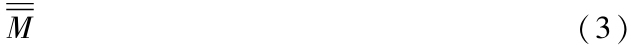
表示双重抽象的结果，即M的基数或势．
由于每个单独的元素m，如果从它的本性中抽象出来的话，则成为一个“单元（unit）”，基数
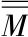
是一个由单元组成的确定集合，而这个数在我们的思想中是作为给定集合M的思维或投影而存在的．我们说两个集合M和N是“等价的”，并以符号
M～N或N～M （4）
表示，是指，如果有可能在它们间按照某种规则设定一个的关系，使得它们中每一个集合的每个元素对应于另一个集合的一个且唯一的一个元素．对M的每个部分集合M1于是对应于一个N的等价部分集合N1，反之亦然，
如果我们有一个给出两个等价集合的规则，那么除去它们每个仅由一个元素组成的情形外，我们可以有多种方式来修改这个规则．譬如，我们总可以留意将M的一个特定的元素m0对应到N的一个特定元素n0．由于，如果按照原来的规则元素m0与n0并不相互对应，而是M的m0对应于N的n1，且N的n0对应于M的m1，我们则可按照m0对应n0，m1对应n1，其余的保持原规则不动来修改规则．这便达到了目的，
每个集合与自己等价：
M～M. （5）
如果两个集合都与某个第三个等价，则它们之间也等价．那就是说：
从M～P及N～P得到M～N． （6）
具有基本意义的定理是：两个集合M和N有相同的基数当且仅当它们等价．因此，从M~N我们得到
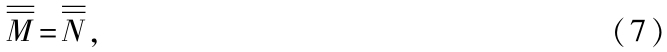
并且从
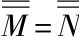
我们得到M～N． （8）
因此集合的等价性形成了它们基数的相等的充分必要条件．
［483］
事实上，根据上面势的定义，基数
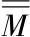
在将M中的一个或许多个甚至全部元素m都替换成其他的东西仍保持不变．如果现在M～N，则就有了一个协调一致的规则，利用它M和N唯一地且互逆地相互指认；根据它，N中的元素n对应于M中元m．于是我们可以想象，在M的每个元素m的位置上换成了N的对应的元素n，并在此方式下，M转换成了N而没有改变基数．因此这个定理的逆定理可由如下注释得到．在M的元素与M的基数的不同单元之间存在着一个互逆的一意［或双方一意（bi-vocal）］的对应关系，如我们已知道的，可以说，
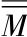
是从M中由M的每个元素m产生M的一个特定单元这种方式生成的．因此我们可以说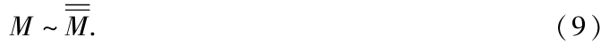
按同样的方式N～
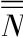
．如果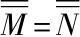
，我们则由（6）有M～N．我们还要提及下述定理，而它立即可由等价概念得到．设M，N，P…为无公共元素的集合，M′，N′，P′，…也是具有同样性质的集合，如果
M～M′，N～N′，P～P′，…，
于是我们总有
（M，N，P，…）～（M′，N′，P′，…）．
如果对于两个集合M和N，
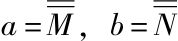
，满足条件：（a）M的任何部分集合均不等价于N；
（b）N有一个部分集合N1使得N1～M．
显然在这些条件中如果将M和N换作等价的集合M′和N′条件仍然成立．因此它们表达了基数a与b间的一个确定的关系．
［484］
进一步，M和N的等价性，从而a与b的相等，不会满足这些条件；否则如果我们有M～N，因为N1～M，从而N1～N，于是由于M～N，故存在M的一个部分集合M1使得M1～N；而这与条件（a）矛盾．
第三，a相b的这个关系使得不可能在b和a之间也有同样的这个关系；因为如果在（a）和（b）中由M和N所扮演的角色进行了交换，这样产生的条件与前面的那个条件相矛盾，
我们将由（a）和（b）所刻画的a和b的这个条件表达为：a“小于”b，或者b“大于”a；记号为
a<b 或者 b>a． （1）
我们容易证明，如果a<b且b<c，则总有
a<c． （2）
类似地，由定义可立即得出：如果P1是集合P的一个部分，则由a<
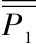
得到a<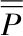
，并且由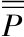
<b得到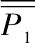
<b．我们已经看到三个关系
a=b，a<b，b<a
中每一个均排斥另两个．另一方面，对于任意两个基数a和b，必定会实现这三个关系中的一个，这是个定理但绝非自明的，在目前阶段还是难于证明的．
直到以后，当我们对于超限基数的递增序列有了进一步了解，并对它们之间的联系有了深入的观察，这才能证明以下定理为真：
A．如果a和b为任两基数，则或者a=b，或a<b，或a>b．
由此定理可非常简单地推出下面的这些定理，但我们在此将不会用到它们．
B．如果两个集合M和N使得M等价于N的一个部分集合N1且N等价于M的一个部分集合M1，则M和N等价．
C．如果M1是集合M的一个部分，M2是M1的一个部分，并且如果集合M和M2为等价则M1等价于M和M2．
D．如果M和N为两个集合，使得N既不等价于M也不等价于M的一个部分，则有N的一个部分集合N1等价于M．
E．如果两个集合M和N不等价，且有N的一个部分集合N1等价于M，则M的任何部分集合都不等价于N．
［485］
两个没有公共元素的集合M和N的并在§1的（2）中记为（M，N）．我们称其为“M和N的并集合”（Vereinigungsmenge）．
如果M′和N′是两个没有公共元素的集合，并且如果M～M′，N～N′，我们则可看出
（M，N）～（M′，N′）．
从而（M，N）的基数只依赖于基数
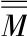
=a和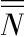
=b．这引向了a与b和的定义．我们令
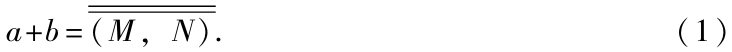
由于在势的概念中，我们抽去了元素的次序，故立刻得出结论
a+b=b+a； （2）
并且对于任意三个基数a，b，c，我们有
a+（b+c）=（a+b）+c． （3）
现在来做乘法．一个集合M的任一元素m可以想成与另一个集合N中的任意元素相联结从而形成一个新的元素（m，n），我们以（M·N）表示所有这些相联结元素（m，n）的集合，并称其为“M和N的连结集合”（Verbindungsme-nge），因此
（M·N）={（m，n）}． （4）
我们看出（M·N）只依赖于势
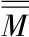
=a和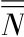
=b；因为，如果将集合M和N换作分别等价于它们的集合M′={m′}或N′={n′}，
并设想m，m′和n，n′是对应的元素，则集合
（M′·N′）={（m′，n′）}
被一个互反的且一意的对应带到（M．N），即将（m，n）视为（m′，n′）的对应元．因此
（M′·N′）～（M·N）． （5）
我们现在以下述方程定义a与b的积
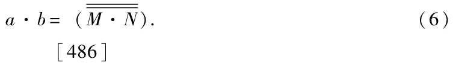
一个具有基数a·b的集合也可以做成由两个各具基数a和b的集合M和N给出，做法可按以下规则进行：从集合N着手，在其中将每个元素n置换为一个集合Mn～M；于是，如果我们将所有这些集合Mn的元素汇拢为一个整体S，我们看到
S～（M·N）， （7）
从而
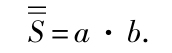
因为，如果用两个等价集合M和Mn的任何已知的对应关系，我们可以以m表示M中对应于Mn中的元素mn的元素，我们便有了
S={mn}； （8）
从而集合S与M·N可以通过将mn和（m，n）看作对应元素而互返且一意，
由我们的定义容易得到定理：
a·b=b·a； （9）
a·（b·c）=（a·b）·c； （10）
a·（b+c）=a·b+a·c. （11）
这是因为
（M·N）～（N·M），
（M·（N·P））～（（M·N）·P），
（M·（N，P））～（（M·N），（M·P））．
势的加法与乘法因而服从于交换，结合，分配律，
对于“以集合M的元素对集合N的覆盖（covering）”或更简单的“M覆盖N”，我们理解为一个规则，按此规则N的每个元素n联结了M的一个确定元素，其中M的同一个元素可以重复地被使用．与n相联结的M的元素以某种方式成为一个n的单值函数，记其为f（n）；称它为一个“n的覆盖函数”．对应的N的覆盖可以叫做f（N）．
［487］
称两个覆盖f1（N）和f2（N）为相等当且仅当对于N的所有元素n满足方程
f1（n）=f2（n）， （1）
故而如果此方程哪怕只对单独一个元素n=n0不成立，f1（N）和f2（N）就会被刻画为N的不同覆盖．譬如，如果m0是M的一个特定元，我们对于所有n可固定取
f（n）=m0，
这个规律构成了M对N的一个特别的覆盖．另一类覆盖是，如果m0和m1为M的两个特定元素，n0是N的一个特定元素，则给出
f（n0）=m0，
f（n）=m1
对所有不同于n0的n成立．
M覆盖N的全体构成一个确定的集合，其元素为f（N）；我们称它为“M对N的覆盖-集合”（Betegungsmenge），并以（N|M）表示．因此：
（N|M）={f（N）｝． （2）
如果M～M′，N～N′，我们可容易得出
（N|M）～（N′|M′）. （3）
因此（N|M）的基数只依赖于基数=a和=b；它可以当做ab的定义：
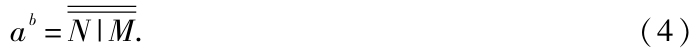
对于任意三个集合M，N，P，可容易证明定理：
（（N|M）·（P|M））～（（N，P）|M）， （5）
（（P|M）·（P|N））～（（P|（M·N））， （6）
（P|（N|M））～（（P·N）|M）， （7）
由此，如果令
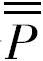
=c，利用（4）并注意到§3，我们有对于任意三个基数a，b，c的定理：ab·ac=ab+c， （8）
ac·bc=（a·b）c， （9）
（ab）c=abc． （10）
［488］
我们通过下面的例子可以看出，这些扩展到势的简单公式是多么重要和意义深远的．如果我们以θ表示线性连续统X（即使得x≥0且≤1的实数x的总体）的势，那么我们容易看出，可以由其中的一个公式
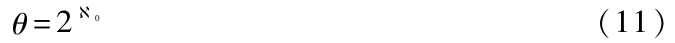
表示，这里
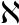
0的意义将在§6给出，事实上，由（4），20是所有数x的二进位表示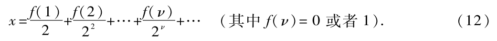
如果我们注意到除去数
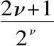
<1外每个数只被表示一次（那些除外的数可表示两次）这个事实，并且如果我们表示所有这些例外“可数的”总体为{sν}，我们则有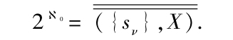
如果我们从X中取走任意一个“可数集”{tν}并记余下的集为X1，我们则有
X=（{tν}，X1）=（{t2ν-1}，{t2ν}，X1），
（{sν}，X）=（{sν}，{tν}，X1），
{t2ν-1}～{sν}，{t2ν}～{tν}，X1～X1；
X～（{sν}，X），
因而（§1）
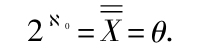
由（11）取平方［§6，（6）］得
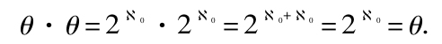
从而，继续乘以θ，有
θv=θ， （13）
其中ν是任意一个有限基数．
如果我们在（11）两端取幂[2]0，我们得到
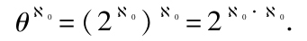
但由于§6，（8），有0·0=0，故有
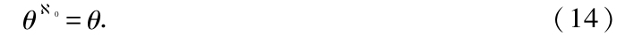
式（13）和式（14）表明ν-维与0-维的连续统具有一维连续统一样的势，因此我在Crelle的Journal，vol.lxxxiv，1878中的文章的整个内容是由基数计算的基本公式经由纯代数一步一步推导出来的．
［489］
我们下面将表明我们所制定的实际上为无穷或超限基数理论的那些原理是如何构建的，并也给出对有限数理论的最自然、最简短和最严格的基础．
对于一个单个的事物e0，如果我们把它算作是一个集合Eo=（e0）的概念，则对应了一个我们称之为“一”的这个基数，并记为1；我们有
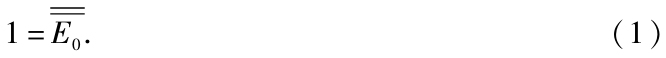
让我们用另一个事物e1与E0相并，并称其为并集E1，故
E1=（E0，e1）=（e0，e1）. （2）
称E1的基数为“二”，记为2：
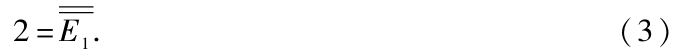
用添加新元素的方法我们便得到一系列的集合
E2=（E1，e2），E3=（E2，e3），…，
它给出了接续无限制的序列，我们将其他的也都称为“有限基数”，记为3，4，5，…在这里作为下标的这些数的使用也由如下的事实表明是合理的：仅当它已经作为基数被定义了才被用作为下标．如果ν-1被理解为是在以上序列中紧靠ν，前面的数，我们便有
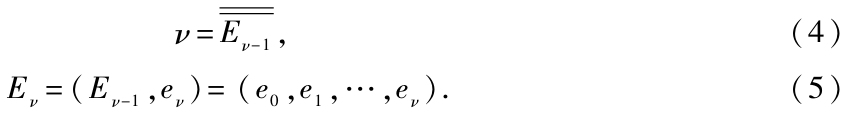
由§3中和的定义得到
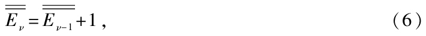
那就是说，除了1以外，每一个基数都是紧靠其前一个与1的和．
现在，我们现在有了下面的前三个定理：
A．有限基数的无限序列的项
1，2．3，…，ν，…
互不相同（这就是说，对于每项所对应的集合不满足在§1中建立的等价条件）．
［490］
B．这些数ν中的每一个均大于前面的那些数而小于后面的那些数（§2）．
C．在两个相邻的数ν和ν+1之间，按大小，没有其他的数（§2）．
我们对于这些定理的证明建立在下面两个定理D和E之上．我们将在稍后给出上面这些定理的严格证明．
D．设M是一个不与自己的部分集合具相等势的集合，则对由M集合添加单个新的元素e得到的（M，e）具有同样的性质，即不与自己的部分集合具相等的势．
E．设N是一个具有限基数ν的集合，且N1为N的任一部分集合，则N1的基数是前面的数1，2，3，…，ν-1中的一个．
D的证明 假设集合（M，e）等价于它的一个部分集合，记其为N．于是可分为两种情形，而每一种情形均引出矛盾：
（a）集合N包含e，以其为元素；令N=（M1，e）；由于N是（M，e）的部分集合，故M1是M的部分集合．如我们在§1所见，两个等价的集合（M，e）与（M1，e）之间的对应规律可以加以修改，使得一个中的元素e对应于另一个中同一个元素e；由此，M与M1之间便有互返的，一意的指认，但这与M与它的部分集合M1不等价的假定相矛盾．
（b）（M，e）的部分集合N不包含元素e，故M或者是N或者是M的一个部分集合．在（M，e）与N的等价规律中，基于我们的假定，对于前者的元素e对应了后者的一个元素f．设N=（M1，f）；于是集合M与M1间便有了个互返的一意关系，但M1是N的从而是M的部分集合．因而这里M又与它的部分集合等价，与假定矛盾．
E的证明 我们将假定此定理直到某个ν的正确性，然后证明它对于ν+1成立，这可由以下方式立即得到：我们从集合Eν=（e0，e1，…，eν）着手，它是一个具基数ν+1的一个集合．如果定理对于此集合为真，那么由§1，对于任何具同样基数ν+1的集合也为真．设E′为Eν的任意部分集合；我们将分成三种情形考虑：
（a）E′不包含eν为元素，则E或为Eν-1．
［491］
或为Eν-1的一个部分集合，故具有基数或为ν或为数1，2，3，…，ν-1中的一个，这是因为我们以假定我们的定理对于具基数ν的集合为真．
（b）E′由单个元素eν组成则
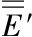
＝1．（c）E′由eν以另一个集合
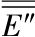
组成，即E′=（E″，eν）．于是E″是Eν-1的部分集合从而由假定，其基数为1，2，3，…，ν-1中的一个．然而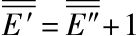
，故E′的基数为2，3，…，ν中之一．A的证明 每一个集合Eν均具有性质：不等价于它的任意部分集合．因为如果我们假设一直到一个确定的ν该断言成立，则由定理D立即得知对下一个数ν+1它也成立．对于ν=1，我们立刻知道集合E1=（e0，e1）不等价于它的任意部分集合，即（e0）和（e1）．现在考虑序列1，2，3，…中的任意两个数μ和ν，那么，如果μ在ν之前，则Eμ-1是Eν-1的部分集合．因此Eμ-1与Eν-1不等价，从而基数μ=
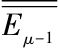
与ν=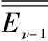
不相等．B的证明 如果这两个有限基数μ和ν中，μ是前面的而ν是它后面的，即μ<ν．考虑两个集合M=
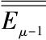
和N=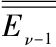
，对于它们，§2的关于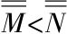
的两个条件均满足．条件（a）之所以满足是因为由定理E，M=Eμ-1的部分集合只能具有基数1，2，3，…，μ-1之一，从而由定理A，不可能等价于集合N=Eν-1．又因为M本身是N的一个部分集合，故条件（b）也满足．C的证明 设a是一个小于ν+1的基数．由于§2的条件（b），存在一个Eν的部分集合其基数等于a．根据定理E，Eν的一个部分集合只能具基数1，2，3，…，ν中的一个．由定理B，它们中没有一个是大于ν的．因此没有基数a是小于ν+1而大于ν的．
下面是一个对后面具重要性的定理：
F．如果K是任一由不同的有限基数构成的集合，则在其中有一个κ1，它比其他的小，因而是所有中最小的．
［492］
证明 集合K或包含了1，这时κ1=1为最小，或者不包含1．这时设J为那些1，2，3…中小于K中的基数的集合．如果一个基数ν属于J，则所有小于ν的基数也属于J．然而J必定有一个元素ν1使得从ν1+1起，所有更大的数都不属于J，否则J就会包含所有的有限数但属于K的数并不包含在J中．因此J是一个截段（Abschnitt）（1，2，3，…，ν1）．数ν1+1必定是K中的一个元素，并且小于其他的数．
由F得到：
G．每个由不同的有限基数组成的集合K={κ}可以做成一个序列的形式
K=（κ1，κ2，κ3，…），
使得
κ1<κ2<κ3<…．
称具有有限基数的集合为“有限集合”，其他所有的则称之为“超限集合”，而称它们的基数为“超限基数”．
所有有限基数ν的总体给出了超限集合的第一个例子；我们称它的基数（§1）为“0”（阿列夫零）；因此我们定义
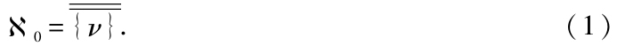
0是超限数就是说它不等于任意有限数μ．这由下面简单事实得到：如果对于集合{ν}添加一个新的元素e0，则并集合（{ν｝，e0）等价于原来的集合{ν｝．因为我们可以想出它们之间的一个互返的一一对应：对于第一个集合的元素e0对应于第二个的1，而第一个的ν对应于第二个的ν+1．由§3我们便得到
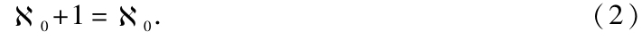
但我们在§5证明了μ+1总不同于μ，因而0不等于任何有限数μ．
数0总大于任意有限数μ：
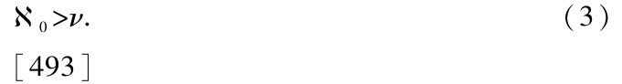
如果我们注意到§3，由三个事实：
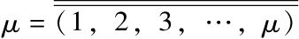
、没有集合（1，2，3，…，μ）的任何部分集合等价于集合{ν}以及（1，2，3，…，μ）自身是{ν}的一个部分集合，便可得出这个断言．另一方面，0是最小的超限数．即如果a是任一异于0的超限数，则
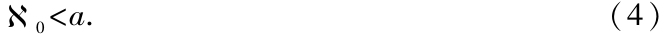
这有赖于以下定理：
A．任意超限集合T都有含有具超限数0的部分集合．
证明 如果按任何方式取走有限个元素t1，t2，…，tν-1，总还可以在取走一个元素tν，集合具任意有限基数ν的集合{tν}是T的一个部分集合，其基数为0，这是因为{tν｝～{ν｝（§1）．
B．如果S是个具基数0的超限集合，而S1是S的任意超限部分集合，则
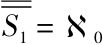
．证明 我们已经假定S～{ν｝．选取这两个集合间的一个确定的对应规则，并按此规则以sν记对应于{ν｝的元素S中的元素，故而
S={sν｝．
S的部分集合S1由S中一些确定的元素sκ组成，而这里的数κ的总体构成集合{ν}的一个超限部分集合K．由§5的定理G，集合K可以记成序列形式
K={κ｝，
其中
κν<κν＋1；
从而我们有
因此得到S1～S，从而．
如果我们注意到§2，那么从A和B便得到了（4）．
由（2）我们在两端各加上1，便得到
并重复此过程得到
我们也有
因为
故由§3的（1），0+0是基数．现在显然有
{ν}=（{2ν-1}，{2ν｝），
（{2ν-1｝，{2ν｝）～（{aν｝，{6ν｝），
从而
方程（6）也可以写成
0·2=0；
并且重复地在两端添加0，我们得到
我们还有
证明 由§3的（6），0·0是连结集合
{（μ，ν）｝
的基数，其中μ和ν为相互独立的任意有限基数．如果λ也代表了任意有限基数，则{λ｝，{μ｝，{ν}是同一个所有有限基数的集合的基数，而只是记号不同；我们必须证明
{（μ，ν）｝～{λ｝．
我们记μ+ν为ρ；于是ρ取所有的数2，3，4，…，并且对于满足μ+ν=ρ的元素（μ，ν）总共有ρ-1个，即
（1，ρ-1），（2，ρ-2），…，（ρ-1，1）．
在此序列中我们设想第一个元素为ρ=2的（1，1），然后是ρ=3的两个元素，然后是ρ=4的，等等．因此我们将所有元素（μ，ν）排成简单的序列：
（1，1）；（1，2），（2，1）；（1，3），（2，2），（3，1）；（1，4），（2，3），…，
从而我们容易看出，元素（μ，ν）的位置λ为
变量λ取所有的值1，2，3，…一次．因此，根据（9），在集合{ν}与{（μ，ν）}之间存在一个互反的一意关系．
［495］
在方程（8）的两端如果乘以0，我们便得到，并且重复地乘以0，对于每个有限基数ν成立一下方程
§5的定理E和A导出了对于有限集合的如下定理：
C．每个有限集合E均不等价于它的任一部分集合．
这个定理与对超限集合的以下定理完全对立：
D．每个超限集合T均有与它等价的部分集合．
证明 由这一节的定理A，存在T的一个部分集合S={tν}，它具有基数0．设T=（S，U），使U由T中那些不同于元素tν的元素组成．我们令S1={tν+1}，T1=（S1，U）；于是T1是T的一个部分集合，事实上，就是T中去掉一个元素tν+1的那个部分集合．由于S～S1，由本节的定理B以及U～U，根据§1我们得到T～T1．
在定理C和D中的对于有限和超限集合之间的本质差异的表示，我曾在1877年，Crelle的Journal，vol.lxxxiv［1878］中也有所叙述，但这里是最为清晰的，
在我们引进了最小的超限基数0并导出了那些最容易掌握的性质之后，便出现了关于更高基数以及它们如何从0继续向前的问题．我们将要证明超限数可以按其大小进行排列，并依此次序，像有限数那样，形成一个扩充了意义的“良序集合”．从0出发，依照一定的规律有下一个较大的基数1，然后由此按同一规律得到再下一个大的2等，但是即便基数的无限序列
0，1，2，…，ν，…
也没有穷竭超限数这个概念，我们将证明存在一个我们记为ω的超限数，它是所有数ν的下一个大的数；像由0推出1一样，我们也由此得到ω+1，等等，永无止尽．
［496］
对于每个超限基数a有一个按照统一规律由此推出下一个较大的数，并且对于每个无限递增的超限数的良序集合{a｝，总有由此集合按同一规律得到下一个更大的数．
对此事的严格基础已在1882年发现并写在了小册子Grundlagen einer allgemeinen Mannichfaltigkeitslehre（Leipzig，1883）以及在Mathematische Annalen的xxi卷中，我们在那里利用了所谓的“序型”；这个理论将在后面的几节中阐明．
我们称一个集合M为“单序集合”是说，如果在它的元素m上有一个确定的“前后次序”（Rangordnung）的规则，使得在每两个元素之间，一个取“低”，另一个取“高”的等级，并使得，如果在三个元素m1，m2和m3之间，譬如说，m1比m2更低，而m2比m3更低，则m1比m3更低．
设两个元素m1和m2的关系为在这个前后次序中m1较低而m2较高，我们则以公式表达此为
m1m2，m2m1. （1）
那么，譬如对于定义在一条直线上的点的集合P，如果设属于它的每两个点p1和p2之间，其中一个的坐标（已在该直线上给定了原点及正向）较小，则给予其较低的等级．
显见，同一个集合可以根据完全不同的规则被赋予“单序”．例如，对于所有大于0小于1的所有正有理数p/q（其中p和q为互素整数）的集合R，首先它们根据大小的“自然”序，另外，它们还可这样安排（我们记在此序下的集合为R0），使得，两个数p1/q1和p2/q2当p1+q1和p2+q2为不同值时，对应于较小值的那个取较低等级，而当p1+q1=p2+q2时，两个它理数中较小者为较低．
［497］
在此前后次序下，由于具相同p+q的只有有限个有理数p/q属于我们的集合，故此集合明显地具有形式
其中
rνrν+1．
因此，当我们谈及一个“单序”集合时，我们总设想在它们的元素间制定了一个确定的，上面所解释的意义下的，那种前后次序．
还有二重的，三重的，ν-重的，a-重的序集合，但我们目前将不考虑它们．故而在一下我们只使用词“有序集合”来替代“单序集合”．
每一个有序集合M有一个确定的“序型”，或者更简短地，一个确定的“型”，并以记号
M
表示．我们对此的理解为，从M中抽取掉元素m的属性而只保留了它们之间的前后次序的一个一般性概念．因此序型M自身是一个有序集合，其元素为作为M中具有同一前后次序的元素所构成的单元，并由此经抽象得出．
我们称两个有序集合M和N为“相似”（ähnlich）是说，如果它们相互之间有一个双方一意的对应使得当m1和m2为M中任意两个元素，而n1和n2为N中的对应元素，则m1对于m2的等级关系与n1对于n2的等级关系相同．我们称这样一个相似集合的对应为这些集合相互的一个“映像”（Abbildung），在这样一个图像中，每一个M的部分集合M1（它显然也是有序集合）对应于N的一个相似部分集合N1．
我们以公式
MN
表示两个有序集合M与N的相似性．
每个定向集合与自己相似．
如果两个有序集合均与第三个有序集合相似则它们之间也相似．
［498］
通过简单考虑可知，两个有序集合具有同一序型当且仅当它们相似，故而这两个公式
中任一个总是另一个的推论．
如果对于序型M我们抽取掉元素的前后次序，我们则得到（§1）集合M的基数，它同时也是序型M的基数，由M=N总可推出，那就是说，具相同型的有序集合总具有相同的势或者说基数；由有序集合的相似性得到了它们的等价性．另一方面，两个集合可以等价而不相似．
我们将用小写的希腊字母来表示序型，如果α是一个序型，则
便被看成是相应的基数．
有限有序集合的序型没有什么特别有趣的东西．我们很容易知道，对于具同一个有限基数ν的所有单序集合全都彼此相似，从而具有同一个序型，因此有限的单序型服从于像有限基数一样的规律，尽管从概念上说它们不同于基数，但我们仍可用同样的记号1，2，3，…，ν，…来表示它们．对于超限序型情形就完全不同了：不可数多个不同的单序集合的序型同属于一个基数，它们的全体构成一个特别地“序型类”（Typenclass）．因此每个这种序型类由这个类的所有序型公共的超限基数a所决定．于是我们简短地称为序型类［a］我们首次要面对的类自然是序型类［0］，它包括所有具最小超限数0的所有序型；因而对它的完全研究必定是超限集合理论的下一个特定目标．我们必须区分决定序型类［a］的基数和那种基数a′，它的部分集合
［499］
是被序型类［a］决定的．这指的是与序型类［a］相关的那种基数，它是一个确有定义的集合，其元素全都是具基数a的序型α．我们将看到，a′不同于a，实际上总大于a．
如果在一个有序集合M中将它的元素的所有前后次序翻转过来，故各处的“较低”变为了“较高”，而“较高”变成了“较低”，于是我们又得到了一个有序集合，记其为
*M， （6）
并称其为M的“逆”．如果，则记*M的序型为
*α． （7）
可能会出现*α＝α的情形，例如在有限序型的情形或者所有大于0而小于1的在通常自然前后次序下的有理数集合．我们在研究这种序型时给予其η这个记号．
我们进一步注意到，两个相似的有序集合可以被一种方式或多种方式相互映像；在第一种情形，所考虑的序型只以一种方式与自身相似，而在第二种情形则有多种方式．我们今后将要处理的，不仅仅是有限序型，而且还有那些只容许它们间有单独一个映像的所谓的超限“良序集合”，另一方面，序型η以无穷多种方式与自身相似．
我们用两个简单例子来将这个差异表达清楚，以ω表示良序集合
（e1，e2，…，eν，…）
的序型，其中
eνeν+1，
而ν代表所有的有限基数，另一个良序集合
（f1，f2，…，fν，…），
满足
fνfν+1，
且具有同一个序型ω，显然可以以唯一地将eν与fν对应的方式映像到前者，对于前者的最低的元素e1必定在此映像下与后者的最低元素f1相关联，e1的下一个等级的元素e2与f1的下一个关联，等等．
［500］
两个等价集合{eν｝和{fν｝之间每个其他的相互一意的对应，在我们前面对于序型理论所固定的意义下都不是“映像”．
另一方面，设我们有一个形如
{eν｝
的有序集合，其中ν表示所有正的和负的有限整数，包括0，且同样地，
eνeν+1．
这个集合没有最低也没有最高等级的元素．由在§8所给的和的定义，它的序型为
*ω+ω．
它有无穷多种方式与自己相似．让我们考虑取同一序型的集合
{fν′}，
其中
fν′fν′+1．
于是这两个有序集合可以这样相互映像，使得如果我们以ν′0表示数ν′中特定的一个，那么第二个的元素fν′＜sub＞0＜/sub＞对应于第一个的元素eν′.因为ν′0任意，故我们有无穷多个映像．
在此所陈述的“序型”概念，当它以相同的方式转到“乘以有序集合”，并涉及§1中引进的“基数”或“势”概念时，它便包括了所有能够数（Anzahlemässige）的任何可以想到的事物，并且再不能进一步推广．它并非是随意的，而是数概念的自然拓展．特别应该强调相等判定准则（4）经由通常序型概念来达到是完全必要的，而不容有其他的选择．韦罗内塞（G．Veronese）的Grundzüge der Geometrie（几何基础，德文，A．Schepp，Leipzig，1894）的重大错误的主要原因便是没有认识到这一点．
“一个有序组的数（Anzahi oder Zahl）”应准确地像我们称之为“一个单序集合的序型”那样定义（Zur Lehre vom Transfiniten，Halle，1890，根据1887年的Zeitischr.für Philos.und philos.Kritik）．
［501］
但是韦罗内塞认为，他必须要对相等判别准则做些添加．他说：“那些它们的单元相互唯一地对应，保持相同次序，且它们中的一个既不是另一个的部分集合也不等于另一个的部分集合的两个数相等，”[3]这个相等的定义包含了一个循环，因而没有意义．添加上的“不等于另一个的部分集合”是什么意思？要回答这个问题，我们必须首先知道两个数何时相等或不等．因此，除了他的相等定义的随意性之外，他已事先假定了相等性的定义，从而这又要事先假定一个相等性的定义，其中我们又必须知道什么是相等或不等，等等无穷无尽．可以这么说，在韦罗内塞放弃了他自己的之后，对数进行比较的不可或缺的基础便空缺了，我们不应该对于它的无规则感到惊奇，随后，他又操作其他的伪超限数，并将各种性质归因于它们，而不能拥有它们，按照他的想象，只不过它们自己除了在纸上外并不存在．因此，同样地，与在Fontenelle的Géométrie de l′Infini（巴黎，1727）中的他的“数”与极其荒诞的“无穷数”的极端相似性便是可以理解的了．最近，W．Killing将关于韦罗内塞的在1895—1896明斯特科学院的Index lectionum的书中的基础的疑问给出了受到欢迎的表达．[4]
两个集合M和N的并集合（M，N），当M和N是有序集合时，可以设想为一个有序集合，其中M的元素间的前后关系，同样还有N中元素的前后关系分别保持与M和N中一样，而M中的所有元素均比N中所有元素等级低．如果M′和N′为另外两个有序集合，MM′及NN′，
［502］
于是（M，N）（M′，N′）；故（M，N）的序型仅依赖于序型M=α和N=β．因此我们定义：
我们称在和α+β中的α为“被加数”而β为“加数”．
对于三个序型容易证明它们的结合律：
α+（β+γ）=（α+β）+γ． （2）
另一方面，对于型的加法，一般说来，不满足交换律．
如果ω是在§7提到的那个良序集合
E=（e1，e2…，eν，…），eνeν+1，
于是1+ω不等于ω+1．因为，如果f是个新的元素，我们由（1）有
1+ω=（f，E），
ω＋1=（E，f），
但集合
（f，E）=（f，e1，e2，…，eν，…）
与集合E相似，从而
1＋ω=ω．
相反地，集合E和（E，f）不相似，这是因为第一个集合没有最高项，而第二个则有最高项f，因此ω+1不同于ω=1+ω．
从两个具有型α和β的有序集合M和N，我们可以将N的每个元素n以一个有序集合Mn替换建立了集合S，其中每个有序集合Mn具有与M同一个序型α，即
并且，对于在集合
S={Mn} （4）
中的前后次序我们给出两个规则：
（1）S中每两个同属于一个集合Mn的元素在S中仍保持在Mn中的前后次序；
（2）S中每两个属于不同集合和元素具有同于在N中n1与n2的前后次序．
我们容易看出，S的序型只依赖于序型α和β；定义
α·β=S． （5）
［503］
称在此乘积中的α为“被乘数”，而β为“乘数”．
在任一确定的M在Mn上的映像中，设Mn中的元素mn为M中元素m的对应；我们于是可以写成
S={mn}． （6）
考虑第三个集合P={p}，其具有序型P=γ，于是由（5）有
但是这两个有序集合{（mn）p）}和相似，并且如果我们将元素（mn）p与相对应，则得到它们之间的一个对应．因此，对序型α，β和γ结合律成立
（α·β）·γ＝α·（β·γ）． （7）
由（1）和（5）容易得到分配律
α·（β＋γ）＝α·β＋α·γ； （8）
但是只有在这个形式中，这含两个项的因子是乘数．
相反地，型的积与它们的和一样，交换律一般并不成立，例如，2·ω与ω·2为不同的序型；因为，由（5），
而
显然不同于ω．
如果我们将§5中基数的初等运算的性质与这里建立的对序型的性质比较，容易看出两个序型和的基数等于每个单个序型的基数之和，而两个序型积的基数等于两个单独的序型的基数的积．那么由两个初等运算推出的序型间的每个方程，如果将其中的序型换作它们的基数则仍然正确．
［504］
像在§7中那样我们将R理解为所有>0且<1的有理数p/q的集合（p和q互素），并在它们的自然前后次序下的体系，其中数的大小确定了它们的等级．我们以η表示R的序型：
η=R． （1）
但是我们也已经在着同一个集合中赋予了另一个前后次序，我们曾称它为R0．这个次序第一位的是由p+q的大小决定．然后第二位的，即对于p+q相等的那些数，由p/q本身的大小决定．集合R0是具序型ω的良序集合：
由于R和R0仅仅在元素的前后次序上不同，故而它们具有相同的基数，而且因为我们显然有，从而我们也有
因此序型η属于序型类［0］．这是R的第一个性质．
第二，我们注意到，在R中既没有最低等级的也没有最高等级的元素，第三，R具有性质：在任意两个元素之间存在有其他的元素．我们由如下语句来表达此性质：R“处处稠密”（überalldicht）．
我们现在要证明这三个性质给出了R的序型η的特征刻画，故而我们有以下定理：
如果我们有单序集合M使得
（a）；
（b）M不具有最低也不具有最高元素；
（c）M处处稠密．
则M的序型为η：
M=η．
证明 由于条件（a），M被赋予了
［505］
具有序型ω的单序集合的形式；固定此形式，并记其为M0，令
M0=（m1，m2，…，mν，…）. （5）
我们现在必须证明
这就是说，我们必须证明M可以被映像到R，使得M的每两个任意元素的先后次序与R中对应元素间的关系相同．
设R中元素r1与M中元素m1关联．元素r2与r1在R中有一个确定的先后次序．由条件（b），有无限多个M中元素mv使得在M中与m1的先后次序同于r2对r1的．我们在其中选一个在M0中具最小指标的元素．记其为，让它与r2关联．元素r3在R中与r1和r2有确定的先后次序；因为条件（b）和（c），有无限多个M的元素mv使得它们对于和之间的先后关系同于r3与r1和r2之间的．在它们中选取一个在M0中具最小指标的，记为ml＜sub＞3＜/sub＞．按此规律，我们设想此相关过程一直进行下去．如果对于R中ν个元素
r1，r2，r3，…，rν
相关联，作为映像，确定的元素
在M中相互具有R中对应元素间同样的先后次序，于是对于R中的元素rν+1，有M中相关联的mν+1，使得它在M中与
的先后次序同于R中rν+1与r1，r2，…，rν的那些元素中在M0中具最小指标．
按此方式，我们有与所有R中元素rν相关联的M中确定的元素，而元素在M中的具有rν在R中同样的先后次序．然而我们还必须证明元素包含了M中所有的元素mν，或者同样的，序列
1，l2，l3，…，lν，…
［506］
只是序列
1，2，3，…，ν
的一个置换．我们以完全归纳法来证明：我们将证明，如果元素m1，m2，…，mν在映像中出现，那么mν+1同样也在其中出现．
设λ如此之大，使得在元素
中包含了元素
m1，m2，…，mν，
按假定它们出现在映像中．可能也可发现mν+1，也在其中；于是mν+1，便出现在映像中．但如果mν+1不在元素
之中，那么mν+1，在M中有一个确定的先后位置，在R中有无限多个元素，它们相对于r1，r2，…，rλ在R中有相同的前后位置，在它们中间设rλ+σ为在R0中具最小指标的那个．于是容易确定，mν+1相对于
具有与rλ+σ相对于
r1，r2，…，rλ+σ-1
相同的前后位置，由于m1，m2，…，mν一经出现在映像中，mν+1便是在M中相对于
的前后次序具有最小指标的元素．因此，根据我们的关联规则，
从而在这种情形，元素mν+1，也出现在映像之中，而rλ+γ是它在R中所关联的元素．
我们于是看到，按照我们的关联方式，整个集合M是整个集合R的映像；M和R是相似集合．这便是我们要证明的．
由我们刚证明的这个定理可以得到，譬如，下面的一些定理：
［507］
这是因为所有这些集合全都满足我们定理中对m所要求的三个条件（见Crelle的Journal，vol.lxxvii）．
进而，如果我们根据§8中所给的定义，考虑被写成η+η，ηη，（1+η）η，（η+1）η，（1+η+1）η的序型，我们发现它们也全都满足这三个条件．因此我们有以下定义：
η+η=η， （7）
ηη=η， （8）
（1+η）η=η， （9）
（η+1）η=η， （10）
（1+η+1）η=η. （11）
反复应用（7）和（8），对于任意有限数υ有
η·ν＝η， （12）
ην＝η. （13）
另一方面，我们容易看出对于ν>1，序型1+η，η+1，ν·η，1+η+1全都互不相同且不同于η．我们有
η+1+η=η， （14）
但η+ν+η对于ν>1不同于η，
最后应该着重指出
［508］
让我们来考虑任意一个单序的超限集合M．M的每个部分集合自身也是个单序集合．为了研究序型，M中那些具有序型ω和*ω的部分集合有着特殊的价值；我们称它们是“包含在M中的第一级基本序列”，而称前者，即具序型ω的为“递增”序列，而后者，即具序型*ω的为“递降”的．由于我们仅局限于考虑第一级的基本序列（以后我们也将对更高级的基本序列进行研究），我们在此将直接称它们为“基本序列”．因此一个“递增基本序列”具有形式
{aν}，其中aνaν+1， （1）
一个“递降基本序列”的形式为
{bν}，其中bνbν+1. （2）
字母ν还有κ，λ和μ在我们所考虑的范围内是有限基数或者一个有限序型（一个有限序数）的意思．
我们称在M中的两个递增基本序列{aν}和{α′ν}为“协同（coherent）”的（Zusammengehörig），并记以
{aν}‖{a′ν}， （3）
是说，如果对于每个元素aν，存在元素a′λ使得
aνa′λ，
同时，对于每个元素a′ν存在元素a′λ，使得
a′νaμ．
称两个递降基本序列{bν}和{b′ν}为“协同”，并记以
{bν}‖{b′ν}， （4）
是说，如果对于每个元素bν存在元素b′λ使得
bνb′λ，
同时，对于每个元素b′ν存在元素bμ，使得
b′νbμ．
称一个递增的基本序列{aν}和一个递降的基本序列{bν}为“协同”的，并记以
［509］
{aν}‖{bν}， （5）
是说，（a）对于所有的ν和μ的值有
aνbμ，
以及（b）在M中最多存在一个（因而或者只有一个或者根本没有）元素m0，使得对所有的ν有
aνm0bν．
于是我们有以下定理：
A.如果两个基本序列协同于第三个，则它们也相互协同．
B.两个以同样方向进行的基本序列，其中一个是另一个的部分集合，为协同．
如果在M中存在一个元素m0，它相对于递增基本序列{aν}有如下位置：
（a）对于每个ν
aνm0，
（b）对于M中每个在m0前面的元素m，存在一个确定的ν0，使得对于ν≥ν0，
aνm，
我们则称m0为“aν在M中的极限元素（Grenzelement）”．也称其为一个“M的主元素（Hauptelement）”．以同样方式，如果满足如下条件：
（a）对于每个ν
bνm0，
（b）对于M的每个在m0之后的元素m存在一个确定的数ν0，使得对于ν≥ν0，
bνm，
我们则称m0为一个“M的主元素”，也称之为“{bν}在M中的极限元素”．
一个基本序列在M中永不会有多于一个的极限元素；但一般来说，M有许多主元素．
我们认识到下列定理的真实性：
C．如果一个基本序列在M中有一个极限元素，则所有与它协同的基本序列在M中有同一个极限元素．
D．如果两个基本序列（不管是按同一方向还是相反方向进行的）在M中有一个相同极限元素，则它们协同．
如果M和M′为两个相似地有序集合从而
并且我们固定着两个集合间的任一个映像，则容易看出成立以下定理：
［510］
E.对于M中每个基本序列作为映像对应了M′中的一个基本序列，反之亦然；对于每个递增的对一个递增的，递降的对应递降的；对于M中协同的基本序列作为映像对应了M′中协同的基本序列，反之亦然．
F.如果M中一个基本序列有属于M的极限元素，这对应的M′中的基本序列有属于M′的极限元素，反之亦然；而且这两个极限元素也相互为映像．
G.M中的主元素对应于作为映像的M′的主元素，反之亦然，
如果一个集合M由主元素组成，即它的每个元素均为主元素，我们则称它为“自身稠密的集合（insichdichte Menge）”．如果对M中每一个基本序列在M中总有一个极限元素，我们则称M为一个“闭（abgeschlossene）集合”．一个集合同时“自身稠密”与“闭”，则称之为“完全集合”．如果一个集合满足这三个断言中的一个，则相似地集合也满足同一个断言；从而这些断言也可归于对应的序型故而有“自身稠密的序型”，“闭序型”，“完全序型”，还有“处处稠密序型”（§9）．
举例说，η是一个“自身稠密”的序型，而且依照在§9中证明的，它也是“处处稠密”的，但它不是“闭”的，序型ω和*ω没有主元素，但ω+ν和ν+*ω每个都有一个主元素，从而是“闭”的．序型ω·3有两个族元素，但不是“闭”的；序型ω·3+ν具有三个主元素，并且是“闭”的．
我们转向研究集合X={x}的序型，其中X为所有满足x≥0且≤1的实数x的集合，具有自然的前后次序，故对于它的两个元素x和x′，如果x<x′，则
xx′．
记它的序型
X=θ. （1）
［511］
由有理数相无理数的基本原理，我们知道X的每个基本序列{xν}在X有一个极限元素x0，并且反过来，X的每个x都是X中协同基本序列的一个极限元素．因此X是个“完全集合”，从而θ是个“完全序型”．
但是θ还不足以被这些特征描述；除此以外我们必须将我们的注意力放在X的下面的性质上．集合X包含了作为在§9中讨论过的序型η的部分集合R，使得在X中任意两个元素x0与x1之间有R中的元素．
我们现在要证明上面所有这些性质一起给出了线性连续统X的序型θ彻底的特征描述，故而我们有定理：
如果一个有序集合M使得（a）它为“完全”，并且（b）在它中包含了一个集合S，它的基数=0，并满足一个对M的关系：在M的任意两个元素m0与m1之间有S中的元素，则M=θ．
证明 如果S有一个最低或最高的元素，由（b），它们与M中元素有同样的性质；我们于是可以将它们移出S而不会改变由（b）表达的它与M之间的关系．因此我们可假定S无最低和最高元素，故而由§9，它具有序型η：由于S是M的部分集合，在任意两个S的元素s0与s1之间，由（b），必定有S的其他元素．另外由（b），我们有因此集合S与R相互“相似”：
我们固定任意一个R到S上的“映像”，并可按如下方式断言，它给出了X到M上的一个确定的“映像”：
设X中所有那些同时属于集合R的元素作为映像对应于M中那些元素，使它们同时是S的元素，并且在R到S上的设定的那个映像下对应于所说的R的元素．但是如果x0是X中不属于R的元素，则可将x0看作是在X中的一个基本序列的极限元素，从而这个基数可以被一个包含在R中的协同的基本序列替换．
［512］
这对应了作为映像S中的和M中的一个基本序列，并且由于（a），它有一个在M中的不属于S的一个极限元素m0（§10，F）．设这个M中的元素m0（如果基本序列{xν}和被其他的同一个元素x0为极限元素的基本序列替换，则根据§10的E，C，和D知它仍然一样）是X中x0的映像．反之，对于每个M中不属于S的元素m0有一个属于它的X的完全确定的元素x0，它不属于R且以m0为映像．
按此方式便建立了在X与m之间的双方一意的对应，而我们现在则必须证明它给出这些集合的一个“映像”．
当然，这是X的属于R的那些元素和对于M的属于S的那些元素的情形．让我们将R的一个元素与X中的不属于R的一个元素x0进行比较；设在M中的对应元素为s和m0．如果r<x0，则有一个递增基本序列，它以x0为极限，并且从某一个ν0往后，对于ν≥ν0，有
在M中的影响是一个递增序列，它以x0为极限元素，从而对于每个ν我们有（§10），以及对于ν≥ν0有因此（§7）sm0．
如果r>x0，我们则相似地得到sm0．
最后让我们考虑两个不属于R的元素x0和x′0，以及在M中它们的对应元素m0和m′0；于是以同样的考虑我们可证明，如果x0<x′0，则m0m′0．
X与M相似性的证明现在完成，我们因而有
M=θ．
1895年3月于哈雷
§12 良序集合
在单序集合中良序集合应该有一个特殊的位置；我们称之为“序数”的它们的序型构成对于高次的超限基数或势的准确定义的自然选材：这是一个那样的定义，它与由所有有限数体系ν给予我们最小超限基数0（§7）的定义完全一致．
我们称一个单序集合F（§7）为“良序”的是说，如果它的元素f从一个最低元素f1以一个确定的接替顺序按以下方式递增：
Ⅰ．在F中有一个最低等级的元素f1．
Ⅱ．如果F′是F的任一部分集合，且F有一个或多个比F′中所有元素更高等级的元素，则F中有一个元素f′紧随在F′的总体之后，即使得在F中没有按等级处在f′与F′之间的元素．[5]
特别地，对于F的单个元素f，如果它不是最高的，按等级在它后面有另一个紧随的确定的元素f′；如果我们将f′作为条件Ⅱ中的F′则得到此断言．进而，譬如，如果一个邻接元素的无穷序列
如此地包含在F中，使得在F中有比所有e（ν）更高的元素，
［208］
则由第二个条件，将整个{eν）作为F′，必存在元素f′使得不仅对所有的ν有
f′eν，
而且也没有F的元素g能满足下面两个条件：
gf′，
geν
对所有的ν都成立．
因此，举例说，三个集合
（a1，a2，…，aν，…），
（a1，a2，…，aν，…，b1，b2，…，bμ，…），
（a1，a2，…，aν，…，b1，b2，…，bμ，…c1，c2，c3），
其中 aνaν+1bμbμ+1c1c2c3，
都是良序的．前两个没有最高元素，第三个有最高元素c3；在第二个和第三个中，b1紧接着在所有元素aν之后，在第三个中，c1紧接在所有aν和所有bμ之后．
在下面我们要将符号和在§7中的用法加以扩张，将那里用于两个元素间的次序关系扩张到元素的集群之间，从而公式
MN，
MN
表达了事实：在一个给定顺序下，集合M的所有元素具有较集合N的所有元素的等级较低或较高．
A．一个良序集合F的每个部分集合F1都有一个最低元素，
证明 如果F的最低元素f1属于F1，则它也是F1的最低元素，在其他情形，设F′为所有F中较F1中所有元素的等级都低的元素的全体，于是由此，F中没有元素介于F′与F1之间，因此如果f′（按Ⅱ）紧随在F′之后，则它必定要属于F1并取最低等级．
B．如果一个单序集合F使得它与它的所有部分集合都有最低元素，则F是个良序集合．
［209］
证明 因为F有一个最低元素，条件Ⅰ得以满足，设F′为F的部分集合，使得F中有一个或更多的元素在F′之后；设F1为所有这些元素的全体，而f′为F1的最小元素，于是显然f′是F中紧随于F′的元素．因此条件Ⅱ也被满足，从而F是个良序集合．
C．一个良序集合的每个部分集合也是良序集合．
证明 由定理A，集合F′连同f′的每个部分集合F″（因为它也是F的部分集合），都有最低元素；因此由定理B，集合F′为良序集合．
D．每个与一个良序集合F相似的集合G也是良序的．
证明 如果M是一个具有最低元素的集合，于是由相似性的概念（§7）立即得到相似于它的每个集合N均有一个最低元素，现在由于我们有GF，而F因为良序故有最低元素，故G亦如此．因此G的每个部分集合G′也都有最低元，这是因为在G与F的映像下有F的部分集合F′作为映像对应于G′，故
但由定理A，F′有最低元素，因此G′也有，从而G连同它的每个部分集合都有最低元素，根据定理B，G为良序集合．
E．如果在一个良序集合G中，在它的元素g的位置上替换为一个良序集Fg使得如果Fg和Fg′，占据了元素g和g′的位置，而gg′，则也有FgFg′，于是按这样的方式将Fg组合在一起形成的集合H是个良序集合．
证明 H与H的每个部分集合H′均具有最低元素，则由定理B，这将H特征刻画为一个良序集合．因为，如果g1是G的最低元素，则的最低元素同时也是H的最低．如果，进一步，我们有一个H的部分集合H1，它的元素属于一些确定的Fg，它们是将这些Fg放在一起形成了集合{Fg}的一个部分集合，而这里的{Fg}是个由元素Fg组成的集合，相似于集合G．如果，譬如是这个部分集合的最低元素，则H1中含在中元素构成的部分集合的最低元素同时也是H1的最低元素．
［210］
如果f是良序集合F的任一不同于起始元素f1的元素，则我们称F中所有在f前面的元素的集合为“F的一个截段（Abschnitt）”或则更全面点，“由元素f定义的F的截段”．另一方面，F的所有其他元素，包括f的集合R成为一个“F的余段”．或更全面地，“由元素f决定的余段”．由§12的定理C，集合A和R都是良序的，根据§8和§12，我们可写成
F=（A，R）， （1）
R=（f，R′）， （2）
AR， （3）
其中R′是R的部分集合，它在起始元素f之后，且如果R除f外没有其他元素，则化为0/．
例如，在良序集合
F=（a1，a2，…，aν，…，b1，b2，…，bμ，…，c1，c2，c3）
中，截段
（a1，a2）
及相应的余段
（a3，a4，…，aν+2，…，b1，b2，…，bμ，…，c1，c2，c3）
都是由a3决定的；截段
（a1，a2，…，aν，…）
及相应的余段
（b1，b2，…，bμ+1，…，c1，c2，c3…）
都是由元素b1决定的；截段
（a1，a2，…，aν，…，b1，b2，…，bμ，…c1）
及相应的余段
（c2，c3）
由元素c2决定．
如果A和A′为F的两个截段，f及f′为它们的决定元素，且
f′f， （4）
则A′是A的一个截段．我们称A′为F的“较小”，A为“较大”截段：
A′<A． （5）
因此，我们可以说F的每个A都“小于”F本身：
A<F．
［211］
A．如果两个相似的良序集合F和G相互映像，则对于F的每个截段A对应一个相似的G的截段B，并对于G的每个截段B对应了F的一个相似的截段A，并且在此映像下F和G中决定A和B的元素f和g也相互对应．
证明 如果我们有两个相似的单序集合M和N相互映像，而m和n为两个相应元素，且M′是M中所有在m前面的元素的集合，N′为N中所有在n前面的元素的集合，于是M′和N′作为映像相互对应．因为，如果对于M中每个在m前面的元素m′，根据§7，必定对应N中一个在n前面的一个元素n′，反之亦然．如果我们将此一般性定理应用于良序结合F和G，则得到我们所要的．
B．一个良序集F不相似于它的任一截段A．
证明 我们假设有FA，则我们可设想已建立了一个F到A上的映像，由定理A，A的截段A′对应于F的截段A，故A′A.因此我们也有A′F且A′A.以同样的方式，由A′也可以产生出一个F中更小的截段A″，使得A″F且A″A′；等等．因此我们便会得到一个F截段的无穷序列
A>A′>A″>…>A（ν）>A（ν+1）…，
它们越来越小，并全都相似于集合F．我们以f，f′，f″，…，f（ν），…表示F中决定这些截段的元素；于是我们便会有
ff′f″…f（ν）f（ν+1）…．
因此我们有一个F的无限部分集合，它没有一个元素为其最低等级元素．但由§12的定理A，F不可能有这样的部分集合．因此F与其一个截段相似的假设导出了矛盾，从而集合F不相似于它的任何截段．
尽管根据定理B，一个良序集合F不相似于它的任一截段，但如果F是无穷集合，总有
［212］
F的其他部分集合与F相似，譬如，集合
F=（a1，a2，…，aν，…）
相似于这些余段
（aκ+1，aκ+2，…，a<sub>κ+ν＜/sub＞，…）
中的任一个．因此，我们可以将下面的定理与定理B放在一起，这是重要的．
C．一个良序集合F不与它的任何一个截段的部分集合相似．
证明 我们假设F′是F的一个截段A的部分集合且F′F．我们设想有一个F到F′的映像；于是由定理A，对于良序集合F的一个截段A，对应着作为映像的F′的截段F″；设此截段由F′中的元素f′决定．元素f′也是A的，从而决定了A的一个截段A′，而F″则成了它的部分集合．F的一个截段A的一个部分集合F′使得F′F的假设因而将我们引到了A的一个截段A′的一个部分集合F″，使得F″A.同样的推断方式给了我们A′的一个截段A″的一个部分集合F ，使得FA′．如此进行下去，像在定理B的证明那样，我们得到了一个F的截段的无限序列，它们越来越小：
，使得FA′．如此进行下去，像在定理B的证明那样，我们得到了一个F的截段的无限序列，它们越来越小：
A>A′>A″>…>Aν>Aν+1>…，
从而有一个决定这些截段的元素的无限序列：
ff′f″…fνfν+1…，
在其中没有最低元素，由§12的定理A，这是不可能的．因此没有F的一个截段A的部分集合F′使得F′F．
D．一个良序集合的两个不同的截段A和A′互不相似．
证明 如果A′<A，则A′是良序集合A的一个截段，因此根据定理B，它不能相似于A．
E．两个相似的良序集合F和G相互间映像的方式是唯一的．
证明 假定有两个F到G上的映像，并设F的元素f在这两个映像下对应了G中的g和g′．设A为F的由f决定的截段，而B和B′为G中由g和g′决定的截段，由定理A，同时有AB
［213］
和AB′，从而BB′，与定理D矛盾．
F．如果F和G是两个良序集合，F的一个截段A最多可以有相似于它的G中的一个截段B．
证明 如果F的截段A可以有相似于它的G中的两个不同的截段B和B′，则它们相互相似，由定理D，这是不可能的．
G．如果A和B分别为两个良序集合F和G的两个相似的截段，则对于F的每个更小的截段A′<A便有一个G中更小的相似截段B′<B，并且对G的每个更小的截段B′<B有F的相似截段A′<A．
将定理A应用到相似地集合A和B便得到证明．
H．如果A和A′为良序集合A的两个截段，B和B′是相似于它们的良序集合G中的两个截段，且A′<A，于是，B′<B．
由定理F和G得到证明．
I．如果良序集合G的一个截段B不相似于一个良序集合F的任何截段，则G的每个截段B′>B和G本身都不与F的任意截段和F本身相似．
证明由定理G得到．
K．如果对良序集合F的任一截段有另一个良序集合G的一个相似截段B，并且对于G的任一截段B有一个F的相似截段A，则FG．
证明 我们可将F按照以下规则映像到G：让F的最低元素f1对应于G的最低元素g1．如果ff1是F的任一个元素，它决定了F的一个截段A根据假设，有一个相应于A的确定的G的相似截段B，那么让f对应于决定B的G中元g．另外，如果g是G的任一个元素，根据假设，有F的一个相应的相似截段A.设决定A的元素f的映像为g．容易得出结论说，如此定义的F与G的这个双方一意的对应是§7意义下的一个映像，因为，如果f和f′为F的任意两个元素，g和g′
［214］
是G中的对应元素，A和A′为f和f′决定的截段，B和B′为g和g′决定的截段；如果，譬如，
f′f，
则有
A′<A．
根据定理H，我们便有
B′<B．
从而
g′g．
L．如果对于一个良序集合F的每个截段A，在另一个良序集合G中有一个相似的截段B，但是另一方面，如果在G中至少有一个截段不相似于F的任一截段，则存在一个G的截段B1使得B1F．
证明 考虑G中那些不相似于F中任何截段的截段全体，其中必定有一个最小的截段，记其为B1.这由如下事实得到：由§12的定理A，所有决定这些截段的元素的集合具有一个最低元；由该元素决定的G的截段B1不相似于F中的任何截段．根据定理Ⅰ，G中大于B1的截段使得所有与它相似的截段均不在F中，因此对应于F中相似截段的G中截段B必定小于B1，并且每个截段B<B1和对应于F中的一个相似截段，这是因为B1是所有那些对应于F中不相似截段的截段中最小的．因此，对F中每个截段有一个F的相似截段A.根据定理K，我们有FB1．
M．如果良序集合G至少有一截段不相似于良序解F中的一个截段，则F中每个截段必定有一个在B中的相似截段．
证明 设B1为G中不相似于F中任何截段的截段集合中最小者．[6]如果在F中有截段不对应于G中截段那么在其中也必有一个最小的，记其为A1．对于A1的每个截段也就会存在一个B1的相似截段，并且对于B1的每个截段有一个A1的相似截段，从而我们就会有
B1A1．
［215］
但是这对假定B1不相似于F的任何截段相矛盾，故而，在F中不可能有一个截段不对应于G中一个相似截段．
N．如果F和G为任何两个良序集，则或者
（a）F和G相互相似，或者
（b）存在G中一个确定的截段B1，使F与它相似；
（c）存在F中一个确定的截段A1，使G与它相似；
并且这三个情形相互排斥．
证明 F对于G的关系可属于以下三种情形之一：
（a）对于F的每个截段A，有一个属于G的相似截段B，并反过来，对于G的每个截段B有属于F的相似截段A；
（b）对于F的每个截段A有属于G的相似截段B，但至少有一个G的截段不对应于A中的一个截段；
（c）对于G中每个截段B有属于F的一个相似截段A，但至少有一个F的截段不对应于F中的相似截段．
F中有一个截段不与G中任何截段相似，同时G也有一个截段不与F中任何截段相似的情形是不可能的，它被定理M排除在外．
根据定理K，在第一种情形我们有
FG．
在第二种情形，由定理Ⅰ，有一个G的确定截段B1使得
B1F；
而在第三种情形，则有F的一个确定的截段A1，使得
A1G．
我们不能同时又FG及FB1，否则就会有GB1，与定理B矛盾；出于同一理由，也不能同时有FG和GA1．另外。同时FB1和GA1也是不可能的，因为，由定理A，有FB1可以得到B1中一个截段B′1使得A1B′1的存在性．因此我们将会有GB′1，与定理B矛盾．
O．如果良序集F的部分集合F′不相似于F的任何截段，那么它则相似于F本身．
证明 根据§12的定理C，F′为良序集合，如果F′不相似于F的任何截段也不相似于F自己，那么由定理N，就会有F′的一个截段F′1相似于F．但F′1是F的一个截段A的一个部分集合，其中
［216］
A是由决定F′1为F′的同一个元素决定的．因此集合F就必须相似于它的一个截段的一个部分集合，这与定理C相矛盾．
根据§7，每个单序集合M都有一个序型M；这个序型是个一般性的概念，它是我们从元素性质中抽象出它们之间的前后次序得到的，故而从它们产生出单元（Einsen）的概念，这些单元按照一个确定的次序排列．所有那些相互相似的，也只有那些集合具有同一个序型．我们称一个良序集合的序型为“序数”．
如果α和β为任意两个序数，则我们将在三种可能关系中居其一，因为如果F和G为两个良序集合使得
F=α，G＝β，
于是，根据§13中定理N，有三个可能的相互排斥的可能情形：
（a）FG；
（b）存在G的一个确定截段B1，使得
FB1；
（c）存在F的一个确定截段A1，使得
GA1．
我们容易看出，这些情形的每一个当F和G被分别换成它们的相似集合时仍然维持不变．因此，我们便有了序型α和β之间的与其相关的三种相互排斥的关系．第一种情形，α=β；在第二种情形，我们说α<β；在第三种情形则说α>β.因此我们有定理：
A．如果α和β为两个序数，我们或者有α=β，或者α<β，或者α>β．
按照少和多的定义，容易得到
B．如果我们有三个序数α，β．γ，且如果α<β以及β<γ，则α<γ．
因此，当我们以大小安排，序数便形成了一个单序集合；以后将看到，它是一个良序集合．
［217］
定义在§8的任意单序集合序型的加法和乘法运算当然可以应用于序数，如果α=，β=，其中F和G为良序集合，则
并集合（F，G）显然是也是良序集合；因而我们有定理
C．两个序数之和仍是序数．
在和α+β中的α被称为“被加数”，β为“加数”．
由于F是（F，G）的一个截段，我们有
α<α+β． （2）
另一方面，G不是（F，G）的一个截段，而是一个余段，因此如我们在§13中曾看到的，它可能会相似于集合（F，G）．若非如此，按照§13的定理O，它则相似于（F，G）的一个截段．因此
β≤α+β. （3）
从而我们有
D．两个序数的和总大于被加数，但大于或等于加数．如果有α+β=α+γ，我们总有β=γ．
一般来说，α+β与β+α不相等，另一方面，如果γ是第三个序数，我们有
（α+β）+γ=α+（β+γ）． （4）
那就是说，
E．在序数的加法中结合律总成立．
如果我们将序型为β的集合G的每个元素g替换为序型为α的集合Fg，根据§12的定理E，我们得到一个连续集合H，它的序型完全由序型α和β决定，并称其为积α·β：
F．两个序数的积仍是序数，
在积α·β中，称α为“被乘数”，而β为“乘数”．
一般说来，α·β与β·α不相等．但我们有（§8）
（α·β）γ＝α·（β·γ）. （7）
那就是说：
［218］
G．在序数的乘法中结合律成立．
一般地，分配律只按以下形式成立：
α·（β+γ）＝α·β+α·γ. （8）
关于积的大小，我们容易看出，成立如下定理：
H．如果乘数大于1，则两个序数的积总大于被乘数，但大于或等于乘数，如果有我们有α·β=αγ，则总有β=γ．
另一方面明显地我们有
α·1＝1·α＝α. （9）
我们现在必须考虑减法运算了．如果α和β是两个序数，并且α小于β，则总存在一个确定的序数，我们称之为β-α，它满足方程
α+（β-α）=β. （10）
因为，如果G=β，则G有一个截段使得β=α，记相应的余段为S，我们有
G=（B，S），
β=α+S；
因此
β-α的确定从以下事实中清楚地显现，即G的截段B是完全确定的（§13的定理D），从而S也唯一地给定，
我们着重指出以下的公式，它们由（4），（8）和（10）得到：
（γ+β）-（γ+α）=β一α， （12）
γ（β-α）=γβ-γα. （13）
仔细思考一下无穷多个序数，它们也可取和，从而它们的和是个确定的序数，同时，这个序数依赖于取和项的顺序这个事实也是件重要的事．如果
β1，β2，…，βν，…
只是任意一个序数的单无穷序列，那末我们有
于是，根据§12的定理E
G=（G1，G2，…，Gν，…） （15）
也是一个良序集合，其叙述表示了数βν的和，我们于是有
并且我们容易从乘积的定义看出，总成立
γ·（β1+β2+…+βν+…）=γ·β1+γ+β2+…+γ·βν+…. （17）
如果我们令
αν＝β1+β2…+βν， （18）
那么
我们有
αν+1>αν， （20）
并且，由（10），我们可以将数βν用数αν表达如下：
β1＝α1；βν+1=αν+1-αν. （21）
序列
α1，α2，…，αν，…
因而代表了序数任意的，满足条件（20）的无穷序列，我们称它为序数的一个“基本序列”（§10）．在它与β之间存在有用以下方式表达的关系：
（a）数β对所有ν大于αν，这是因为序数为αν的集合（G1，G2，…，Gν）是集合G的一个截段，而G的序数为β的缘故．
（b）如果β′是任一个小于β的序数，则从某个ν往后，总有
αν>β′．
这是因为，由与β′<β，集合G有一个截段B′具有序型β′．G的决定这个截段的元素必定属于部分集合Gν中的一个；设其为部分集合，那么B′也是（G1，G2，…，）的一个截段，从而，因此对于ν≥ν0有
αν>β′．
于是β是个序数，它是在所有数αν后的按大小次序的下一个数；从而我们称它为数αν当ν增大时的“极限”（Grenze），并记为Limναν，故而，由（16）和（21），有
Limναν＝α1+（α2-α1）+…+（αν+1-αν）+…. （22）
［220］
我们将所做的表达为如下的定理：
1．对于每个序数的基本序列{αν}有隶属于它的一个序数Limναμ，它在大小关系下是在所有数αμ后的下一个数；它由公式（22）表示．
如果以γ表示任一个固定的序数，借助于公式（12），（13）和（17），我们容易证明含在下列公式中的定理：
Limν（γ+αν）＝γ+Limναν； （23）
Limνγ·αν＝γ·Limναν. （24）
我们在§7中已提到所有给定了有限基数ν的单序集合有且只有一个序型，可以证明如下，每个具有限基数的单序集合是一个良序集合；对于它以及它的每一个部分集合，必有一个最低元素，并且根据§12的定理B，这特征刻画出它是个良序集合，单序集合的序型因而正是有限的序数，但是两个不同的序数α和β不可能属于同一个基数ν.因为，如果譬如说，α<β以及G=β，则，如我们已知，存在一个G的截段B，使得B=α．因此集合G和它的部分集合B就会有同一个有限基数ν，根据§6的定理C，这是不可能的．于是有限序数在性质上与有限基数相同．
对于超限序数，情形完全不同；对于同一个超限基数a有隶属于它的无穷多个序数，它们形成一个统一的相关联的体系，我们称之为“数类Z（a）（number-class）”，它是§7的序型类［a］的一个部分集合，我们考虑的下一个对象将是数类Z（0），我们称它为“第二数类”．与此相关，我们称有限序数的总体{ν｝为“第一数类”．
［221］
第二数类Z（0）是具有基数0（§6）的良序集合的序型α的总体{α}．
A．第二数类有一个最小数ω=Limνν．
证明 以ω表示良序集合
F0＝（f1，f2，…，fν，…） （1）
的序型，其中ν经过所有的有限序数，并且
fνfν+1. （2）
因此（§7）
以及（§6）
ω=0． （4）
因此ω是一个第二数类的数，并是最小的，因为，如果γ是任意小于ω的数它必定（§14）是F0的一个截段的序型，但是F0只有具有限序数ν的截段
A=（f1，f2，…，fν）．
因此没有小于ω的超限数，从而ω是它们中最小的，根据§14给出的Limναν的定义，我们显然有ω=Limνν．
B．如果α是第二数类中任一个数，则α+1是随它之后的同一数类中下一个大的数．
证明 设F是一个序型为α的良序集合，并具有基数0：
以g表示一个新元素，我们则有
由于F是（F，g）的一个截段，我们便有
α+1>α. （8）
我们还有
因此数α+1属于第二数类，在α与α+1之间没有其他序数；对于每个小于α+1的数γ，
［222］
作为序型对应于（F，g）的一个截段，而这样一个截段只能是F或者F的一个截段．因此γ要么等于要么小于α．
C．如果α1，α2，…，αν，…是第一或第二数类的任一基本序列，则按大小顺序在它们之后的数Limναν（§14）属于第二数类．
证明 根据§14，如果我们从基本序列{αν}构造另一个序列β1，β2，…，βν，…，其中
β1=α1，β2=α2-α1，…，βν+1=αν+1-αν，…，
则可得到Limναν．于是如果G1，G2，…，Gν，…为良序集合，使得
那么
G=（G1，G2，…，Gν，…）
也是一个良序集合，并且
这是由于数β1，β2，…，βν，…属于第一或第二数类，我们有
因而
但是在任一种情形，G都是一个超限集合，从而应该排除的情形．
我们称两个第一或第二数类的数的基本序列αν和α′νL（§10）为记作
{αν}‖{α′ν} （9）
的“协同”是说，如果对于每个ν有有限数λ0和μ0使得
α′λ>αν，λ≥λ0， （10）
和
αμ>α′ν，μ≥μ0. （11）
［223］
D．分别属于两个基本序列{αν}和{α′ν}的极限数Limναν和Limνα′ν相等当且仅当{αν}‖{α′ν}．
证明 为简便起见，我们令Limναν=β，Limνα′ν=γ．先设{αν}‖{α′ν}；于是我们断言有β=γ．因为如果β不等于γ，那么这两个数中有一个较小，假设β<γ．从某一个ν往后我们就会有α′ν>β（§14），从而根据（11），从某个μ往后我们就会有αμ>β，但因为β=Limναν这是不可能的，因此对于所有的μ我们有αμ<β．
反之，如果我们设β=γ，则由于αν<γ，我们必定可断言，从某个λ往后有α′λ>αν，并且由于α′ν<β，我们必定可断言从某个μ往后有αμ>α′ν．这就是说{αν}‖｛α′ν｝．
E．如果α是第二数类中的任何数，而ν0为任一有限序数，我们则有ν0+α=α，从而也有α-ν0=α．
证明 我们首先要让我们验证定理在α=ω是正确的，我们有
因此
但是，如果α>ω，我们则有
α＝ω+（α-ω），
ν0+α＝（ν0+ω）+（α-ω）=ω+（α-ω）=α．
F．如果ν0为任一有限序数我们则有ν0·ω=ω．
证明 为了得到一个具序型ν0·ω=ω的集合，我们必须将集合（f1，f2，…，fν，…）中每个元fν替换为具序型ν0的集合（gν，1，gν，2，…，）．我们于是得到集合
（g1，1，g1，2，…，g1，ν0，g2，1，g2，2，…，，…，gν，1，gν，2，…，，…），
它显然相似于集合{fν}．因此，
ν0·ω＝ω．
也可以更简单地得到同样的结果如下．因为ω=Limνν．根据§14的（24）我们有
ν0·ω=Limνν0ν．
另一方面，
{ν0ν}‖{ν}，
因此
Limνν0ν=Limνν=ω，
故
ν0·ω＝ω．
［224］
G．我们总有
（α+ν0）·ω=α·ω，
其中α是第二数类的数，而ν0是第一数类的数．
证明 我们有
Limνν＝ω．
根据§14的（24）因而有
（α+ν0）ω＝Limν（α+ν0）ν．
但是，
我们现在容易看出，
{αν+ν0}‖{αν}，
从而
Limν（α+ν0）ν=Limν（αν+ν0）=Limναν＝αω．
H.如果α是第二数类中的任一数，则所有小于α的第一数类和第二数类的数α′的总体{α′}在它们的大小顺序下形成一个序型为α的良序集合．
证明 设F为满足F=α的一个连续集合并设f1为F的最小元素．如果α′是任一个小于α的序数，于是由§14知，存在F的一个截段A′使得
A′=α′，
并且反过来，每个截段A′由它的序型A=α′决定，而数α′<α为第一或第二数类．这是因为，由于，故只能或是一个有限基数或是0．截段A′由F中元素f′f1决定．如果f′和f″为F的两个元素，它们处在f1之后，而A′和A″为由它们决定的F的截段，α′和α″为它们的序型，并且，譬如说，f′f″，于是根据§13有A′<A″从而α′<α″．
［225］
如果我们令F=（f1，F′），于是当我们使得F′的元素f′对应于{α′}的元素α′，便得到这两个集合之间的一个映像．因此，我们有
但是，＝α-1，而按照定理E，α-1=α．从而
由于α=0，我们也有=0；因此我们有定理：
I．小于一个第二类数α的第一数类或第二数类的数α′的集合{α′}具有基数0．
K．第二数类的每个数α或者（a）由下一个更小的数α-1，加1得到：
α＝α-1+1，
或者（b）有一个第一类数或第二数类的数形成的基本序列{αν}使得
α＝Limναν．
证明 设α=F．如果F具有一个最高等级的元素g，我们则有F=（A，g），其中A是F中有g决定的截段．于是我们有了定理的第一种情形，即
α＝+1=α-1+1．
但是如果F没有最高元素，则考虑所有小于α的第一或第二数类的数的总体{α′｝．根据定理H，按照大小安排的集合{α′}相似于集合F；因此在这些数α′中没有最大的．由定理I，集合{α′}可以直接形成一个形如{α′ν}的无穷序列，如果我们从α1着手，下面依次的元素为α′2，α′3，…；这个顺序不同于大小的顺序，一般来说也许会小于α′1；但是无论如何，在此过程推进中总会出现大于α′1的项；因为α′1不能大于所有其他的项，令α′ν中大于α′1的元素例句最小指标的为相似地，设为序列{α′ν}中大于的数中指标最小的数．如此进行下去，我们得到一个递增的无穷的数序列，事实上是一个基本序列
［226］
我们有
1ρ2ρ3…ρνρν+1…，
α′1α′ρ2α′ρ3…α′ρνα′ρν+1…，
如果μρρν总有α′μα′ρν；
并且因为显然ν≤ρν，故总有
α′ν≤α′ρν．
于是我们看出，每个数α′ν从而每个数α′α对于充分大的ν值总被数α′ρν超过．但是α是按照大小紧随在所有数α′之后的数，因而也是对于所有α′ρν的下一个最大的数．因此如果我们令α′1=α，α′ρν+1=αν+1，我们则有
α=Limναν．
从定理B，C，…，K可清楚看出第二数类是由更小的数以两种方式产生的．那些我们称之为“第一种（Art）数”的数是由下一个小的数α-1，加1按照公式
α=α-1+1
得到；另外那些我们称之为“第二种数”的数没有第二个小的数，而是作为基本序列αν的极限按公式
α=Limναν
产生的．这里的α是按大小紧随在所有数αν之后的数．
我们称这两种从较小的数得出较大的数的方式为“产生第二数类的数的第一和第二原理”．
在我们转向下一节更详细讨论第二数类的数及控制它们的规律之前，我们将回答关于所有这些数的集合Z（0）={α}所具有的基数的问题．
［227］
A．第二数类的所有数α的总体{α}当按大小排序时是个良序集合．
证明 如果我们以Aα表示小于一个给定数α的所有第二数类的数的总体，而且按大小排序，则Aα是一个具序型α-ω的良序集合．这可由§14的定理H得到，第一数类和第二数类的数中被记以α′的集合是由{ν}和Aα并和成的，故
{α′}=（{ν}，Aα）．
因此
并且由于
我们有
设J为{α}的部分集合使得在{α}中有数大于J的所有数．譬如，设α0是其中那样一个数．于是J也是的部分集合，的确，至少在中的数α0大于J的所有数．因为是个良序集合，根据§12，的一个数α′，从而也是{α}的一个数，必定紧随在J的所有数之后．因此§12的条件Ⅱ在{α}的情形被满足；§12的条件也被满足，这是因为{α}具有最小数ω．
现在，如果我们对于良序集合{α}应用§12的定理A和B，则可得到如下定理：
B．第一数类和第二数类的不同的数的每一个总体都有一个最小数．
C．第一数类和第二数类的不同的数的总体按大小顺序是个良序集合．
我们现在要证明第二数类的所有数的势不同于第一数类的势0．
D．第二数类的所有数α的总体{α}的势不等于0．
证明 如果，我们就会将总体{α}做成一个简单的无穷序列
γ1，γ2，…，γν，…，
使得{γν}能表示为第二数类的所有数的总体，
［228］
但它的顺序不同于大小顺序，并且{γν}像{α}那样，不包含最大数．
从γ1开始，设γρ2为这个序列中大于γ1而具有最小指标的项，γρ3则是序列中大于γρ2而具有最小指标的项，等等．我们得到了一个数的无穷递增序列
γ1，γρ2，…，γρν，…，
使得
1<ρ2<ρ3…<ρν<ρν+1<…，
γ1<γρ2<γρ3<…<γρν<γρ＜sub＞ν+1＜/sub＞<…，
γν≤γρν．
根据§15的定理C，存在一个确定的第二数类的数δ，即
δ=Limνγρν，
它大于所有的数γρν．因此，对于所有的ν我们有
但是{γν}包含了所有的第二数类的数，从而数δ亦如此；于是对于一个确定的ν0有
这个等式与关系式不合，因此假设引出了矛盾．
E．任一第二数类的不同的数β的总体{β｝，如果是无穷多个，则它或者有基数0，或者是第二数类的基数．
证明：当将集合{β}按大小安排时，由于它是良序集合{α}的部分集合，根据§13的定理O，它或者相似于一个截段，这个截段是按大小顺序小于α0的同一数类的所有数的总体，或者相似于总体{α}本身．如同在定理A的证明中显示的那样，我们有
因此我们或者有=α0-ω或者{β}={a}，因而{β}或者等于或者等于{α}．但是或者是一个有限基数，或者等于0（§15定理1）．因为{β}被假定为无穷集合，故第一种情形被排除，因此基数或为0或为{α}．
让我们首先去熟悉Z（0）的那些是ω的整代数函数的数，这将带来一些方便．这样的每个数可以给予，也是以唯一的方式给予形式
φ=ωμν0+ωμ-1ν1+…+νμ， （1）
其中μ，ν0为不同于0的有限数但ν1，ν2，…，νμ可以为0．这个断言基于的事实是，如果μ′μ且ν0，ν′0，则
ωμ′ν′+ωμν＝ωμυ， （2）
这是因为根据§14的（8），我们有
并且，根据§15的定理E有
因此，在形如
的集合中，所有那些在跟随在其右边后面具有ω的高阶的项的项都可被略去．这个方法可继续直到达到（1）中给出的形式．我们还需强调
ωμν+ωμν′=ωμ（ν+ν′）. （3）
现在比较φ及同一型的数ψ
ψ＝ωλρ0+ωλ-1ρ1+…+ρλ. （4）
如果μ和λ不同，譬如，μ<λ，我们由（2）有φ+ψ=ψ，因此φ<ψ．
［230］
如果μ=λ，ν0与ρ0不同，譬如ν0<ρ0，由（2）我们有
φ+（ωλ（ρ0-ν0）+ωλ-1ρ1+·+ρμ）=ψ，
从而
φ<ψ．
最后，如果
μ=λ，ν0=ρ0，ν1=ρ1，…，νσ-1=ρσ-1，σ≤μ，
但是ν0不同于ρσ，譬如，νσ<ρσ，我们则根据（2）得到
φ+［ωλ-σ（ρσ-νσ）+ωλ-σ-1ρσ+1+…+ρμ］=ψ，
因此仍旧有
φ<ψ．
于是，我们看到只有在φ和ψ的表达式恒同的情形下，它们所代表的数才相等．
φ和ψ的加法给出了以下结果：
（a）如果μ<λ，如我们在上面所说，
φ+ψ=ψ；
（b）如果μ=λ，我们则有
φ+ψ=ωλ（ν0+ρ0）+ωλ-1ρ1+…+ρλ；
（c）如果μ>λ，我们有
φ+ψ=ωμν0+ωμ-1ν1+…+ωλ+1νμ-λ-1+ωλ（νμ-λ+ρ0）+ωλ-1ρ1+…+ρλ．
为了进行φ和ψ的乘法，我们注意到，如果ρ是一个不等于0的有限数，我们则有公式
φρ=ωμν0ρ+ωμ-1ν1+…+νμ， （5）
它容易从进行ρ项的和φ+φ+…+φ得到．由反复应有§15的定理G，并再回想§15的定理F，我们便得到
φω=ωμ+1， （6）
从而也有
φωλ=ωμ+λ. （7）
根据§14中标有（8）的分配律，我们有
φψ=φωλρ0+φωλ-1ρ1+…+φωρλ-1+φρλ．
因此公式（4），（5）和（7）给出了以下结果：
（a）如果ρλ=0，我们有
φψ=ωμ+λρ0+ωμ+λ-1ρ1+…+ωμ+1ρλ-1=ωμψ；
（b）如果ρλ不等于零，我们有
φψ=ωμ+λρ0+ωμ+λ-1ρ1+…+ωμ+1ρλ-1+ωμν0ρλ+ωμ-1ν1+…+νμ．
［231］
我们以以下方式达到了数φ的一个值得注意的分解．设
φ＝ωμκ0+ωμ1κ1+…+ωμγκr， （8）
其中
μ>μ1>μ2>…>μg≥0，
而κ0，κ1，…，κr为不等于零的有限数．于是我们有
反复使用此公式我们得到
在这里出现的因子（ωλ+1）全都不可分解，并且一个数φ只能以一种方式表述为这个乘积形式，如果μr=0，则φ是第一型的而其余情形则为第二型．
这一节的公式与在Math．Ann．，vol．xxi（或“Grundlagen”）中的公式有明显的偏差，这不过是对于两个数的乘积的不同写法而已：我们现在将被乘数放在了左面，而乘数在右，而那时我们将它们放在相反的位置．
设ξ为一个定义域由第一和第二数类的数，包括零组成．设γ和δ为两个属于同一定义域的常数，并设
δ>0，γ>1．
我们于是可断言成立以下定理：
A．存在一个完全确定的变量ξ的单值函数f（ξ）使得
（a）f（0）=δ，
（b）如果ξ′和ξ″为ξ的两个值，并且如果
ξ′<ξ″，
则
f（ξ′）<f（ξ″）．
［232］
（c）对于ξ的每个值我们有
f（ξ+1）=f（ξ）γ．
（d）如果{ξν}是一个基本序列，则{f（ξν）}也是一个基本序列，并且如果我们有
ξ=Limνξ′ν，
则
f（ξ）=Limνf（ξν）．
证明 根据（a）和（c），我们有
f（1）=δγ，f（2）=δγγ，f（3）=δγγγ，…，
而且，由于δ0以及γ1，我们有
f（1）<f（2）<f（3）<…<f（ν）<f（ν+1）<…．
因此函数f（ξ）对于ξω的范围内被完全决定．我们现在假定此定理对于所有小于α的ξ的值成立，其中α是第二数类中的任意一个数，于是它也对于ξ≤α成立．这是因为如果α是第一型的，我们则由（c）有
f（α）＝f（α-1）γ>f（α-1）；
故条件（b），（c）和（d）对于ξ≤α被满足，但是如果α是第二型的并且{αν}是个基本序列，使得Limναν=α，则由（b）得出{f（αν）｝也是个基本序列从而由（d）知f（α）=Limνf（αnu）．如果我们取另一个基本序列{α′ν}使得Limνα′ν=α，则因为（b），这两个基本序列{f（αν}和{f（α′ν）}为协同，因而也有f（α）=Limνf（α′ν）．f（α）的值从而在这情形也被唯一决定．
如果α′是任意小于α的数，我们容易验证f（α′）<f（α）．条件（b），（c）和（d）也为ξ≤α所满足．因此得到，该定理对于ξ的所有值都成立的结论．这是因为，如果有例外的ξ的值使它不成立，那么，根据§16的定理B知，它们中的一个，姑且记为α，就不得不是最小的．于是定理就会对于ξ<α成立，但不对ξ≤α成立，而这就与我们已证明的结果矛盾，因此对于ξ的整个定义域有一个且只有一个函数f（ξ）满足条件（a）到（d）．
［233］
如果我们赋予常数δ以值1，而后以
γξ
表示函数f（ξ），我们则可明确表达出如下的定理：
B．如果γ是任意大于1的，属于第一或第二数类的常数，则存在一个完全确定的ξ的函数γξ，使得
（a）ξ0=1；
（b）如果ξ′<ξ″，则；
（c）对于ξ的每个值，我们有γξ+1=γξγ；
（d）如果{ξν}是一个基本序列，则也是个基本序列，并且如果ξ=Limνξν，则有等式
我们也可断定下面的定理成立：
C．如果f（ξ）是由定理A所刻画的函数我们则有
f（ξ）=δγξ．
证明 如果我们注意到§14的（24），则我们就容易验证函数不仅满足定理A的条件（a），（b）和（c）而且还有此定理的条件（d）．考虑到函数f（ξ）的唯一性，它必定恒等于．
D．如果α和β为第一或第二数类中任意两个数，包括零，我们则有
γα＋β＝γαγβ．
证明 考虑函数φ（ξ）=γαξ，并注意如下事实：由§14的公式（23），有
Limν（α+ξν）＝αLimνξν，
从而使我们认识到φ（ξ）满足以下四个条件：
（a）φ（0）=γα；
（b）如果ξ′<ξ″，则φ（ξ′）<ψ（ξ″）；
（c）对于ξ的任意值我们有φ（ξ+1）=φ（ξ）γ；
（d）如果{ξν}是一个基本序列，使得Limνξν＝ξ，我们则有
φ（ξ）=Limνφ（ξν）．
在定理C中令δ=γα时我们有
φ（ξ）=γαγξ，
如果我们在其中令ξ=β，则有
γα+β=γαγβ．
E．如果α和β是第一或第二数类中的任意两个数，包括零，我们则有
γαβ＝（γα）β．
［234］
证明 我们来考虑函数ψ（ξ）=γαξ，并注意到，由§14的（24）我们总有Limναξnu=αLimνξν，于是由定理D，可以有如下断言：
（a）ψ（0）=1；
（b）如果ξ′<ξ″，则ψ（ξ′）<ψ（ξ″）；
（c）对于ξ的每个值有ψ（ξ+1）=ψ（ξ）γα；
（d）如果{ξν}是个基本序列，则{ψ（ξν）｝也是个基本序列，并且如果ξ=Limνξν，则有等式ψ（ξ）=Limνψ（ξν）．
因此，如果在定理C中将δ换成1，将γ换作γα，就得到
ψ（ξ）=（γα）ξ．
就大小而言，γξ与ξ相比有如下的定理：
F．如果γ>1，则对于ξ的任何值我们有
γξ≥ξ．
证明 在ξ=0和ξ=1的情形定理立即可得．我们现在证明，如果它对于一个小于给定的数α1的所有ξ的值都成立，那么它就对ξ=α成立．
如果α是第一型的数，由假定我们有
α-1≤γα-1，
从而
α-1γ≤γα-1γ＝γα．
因此
γα≥α-1+α-1（γ-1）．
由于α-1和γ至少等于1，而α-1+1=α，我们便有
γ≥α．
另一方面，如果α是第二型的，从而有
α=Limναν，
于是由于ανα，我们由假定有
因此
这就是说，
α≤γα，
现在如果有ξ的值使得
ξ>γξ，
那么根据§16的定理B，它们中有一个就必须是最小的，如记此数为α，我们对于ξα就会有
［235］
ξ≤γξ；
但是
α>γα，
这与我们前面所证矛盾．因此对于所有ξ的只有
γξ≥ξ．
设α为第二数类中的任意数．幂ωξ对于充分大的ξ值将大于α．由§18的定理F，对于ξ>α就总是这样的；但是一般来说这也会发生在ξ的较小的值．
由§16的定理B，在ξ的值中必定有使得
ωξα
为最小的一个，记其为β，我们容易验证它不可能是第二型数，实际上，如果我们有
β=Limνβν，
并由于βνβ，我们就会有
ω≤α，
因而
于是由此有
ωβ≤α，
然而我们却有
ωβ>α．
因此β是第一型的数，以α0记β-1，故而β=α0+1，从而可以断言，有一个完全确定的第一数类或第二数类的数α0满足下面两个条件：
由第二个条件我们得到
不是对所有的有限数ν都成立，这是因为如果不是这样我们就会有
我们记使得
的最小有限数ν为κ0+1．由于（1），我们有κ0>0．
［236］
因此有一个完全确定的第一数类的数κ0使得
如果令，我们便有
以及
但是α在条件（4）下只有唯一的一种方式表示为（3）的形式．这是因为，从（3）和（4）可反过来推出条件（2），从而推出条件（1）．然而只有数α0=β-1，满足条件（1），而根据条件（2），有限数κ0被唯一决定，如果注意到§18的定理F，从（1）和（4）便可得到
α′<α，α0≤α．
因此我们得到以下定理：
A．第二数类的每个数α可以被给予，并且以唯一的方式被给予形式
其中
并且α′总是小于α，而α0小于或等于α．
如果α′是一个第二数类的数，我们则可对它应用定理A，从而有
其中
以及
α1<α0，α″<α′．
一般地，我们可以得到进一步相似等式的序列
但这不可能无限下去，必定要中断．这是因为α，α′，α″，α，按大小递降：
α>α′>α″>α>…，
如果一个超限数的递降序列是无限的，则没有一个是最小的；由§16的定理B，这是不可能的，因此有一个确定的有限数值τ使得
ατ+1=0．
［237］
现在我们如果将等式（3），（4），（5）和（6）相互结合，便得到了定理：
B．每个第二数类的数α都可以表示且以唯一的方式表示为形式
其中α0，α1，…，αγ，为第一或第二数类的数，使得
α0>α1>α2>…>ατ≥0，
而κ0，κ1，…，κτ，γ+1为不等于0的第一数类的数．
称上面表示出的第二数类的数的形式为它们的“正规形式”；称α0为α的“次数”，ατ为α的“指数”．对于τ＝0，次数与指数相等．
依照指数τ等于或大于零表明α是第一还是第二数类的数．
让我们取另一个写成正规形式的数β，
公式
其中κ，κ′，κ″代表有限数，可以作为见α与β进行比较以及进行加减的工具．这些都是§17的公式（2），（3）的推广．
对于乘积αβ的构成可考虑如下的公式：
容易基于以下公式进行取幂αβ：
右端没有写出的项比第一个的次数低．因此容易推导出基本序列{αλ}和协同，故
因此按照§18定理E，我们有
借助于这些公式我们可证明以下公式；
［238］
C．如果这两个数α和β的首项，不相等，那么按照是小于还是大于决定α是小于还是大于β．但是如果我们有
而如果小于或大于，则相应地，α小于或大于β．
D．如果α的次数α0小于β的次数β0，我们有
α+β=β．
如果α0=β0，则
但是如果
α0>β0，α1>β0，…，αρ≥β0，αρ+1<β0，
则
E．如果β是第二型的（βσ>0），则
但是如果β是第一型的（βσ=0），则有
F．如果β是第二型的（βσ>0），则
但是如果β为第一型的（βσ=0），的确就有β=β′+λσ，其中β′是第二型的，我们则有
G．每个第二数类的数α只以一种方式被表示为乘积形式：
而且我们有
γ0=αγ，γ1=αγ-1-α2，γ2=αγ-2-αγ-2，…，γγ＝α0-α1，
这里的κ0，γ1，…，κτ同于正规形式中的记号．因式ωγ+1全为不可分解的．
H.属于第二数类的第二型的每个数可以被表示为，且以唯一的方式表示为形式
其中γ00，而α′是属于第一或第二数类的第一型数．
［239］
I．为了使第二数类的两个数α和β满足
α+β=β+α，
其充分必要条件是它们应该具有形式
α＝γμ，βγν，
其中μ和ν属于第一数类．
K．为了使两个第二数类的第一型的数α和β满足关系
αβ=βα，
其充分必要条件是它们应具有形式
α=γμ，β=γν，
其中μ和ν均属于第一数类．
为了作为所处理的第二数类的数的正规形式以及与它直接相关联的乘积形式的广泛实用性的示例，我们在下面给出最后面的两个定理的证明，在其中可以发现它们是怎样起作用的，
由假定
α+β=β+α，
我们首先推导出α的次数α0必须等于β的次数β0．因为如若不然，譬如，α0β0，根据定理D，我们就会有
α+β＝β，
从而
β+α=β，
这是不可能的这是由于按照§14的（2）有
β+α>β．
所以我们可写成
这里的α′和β′的次数均小于α0，而μ和ν是不同于0的有限数．现由定理D我们有
因而
根据§14的定理D我们便有了
β′=α′．
故有
而如果令
根据（11），我们有
α=γμ，β=γν．
另一方面，我们再设α和β是第二数类的第一型的数，它们满足条件
αβ=βα，
并假定
α>β．
根据定理G，我们可以设想这两个数都写成了它们的乘积形式，设
α=δα′，β=δβ′，
其中α′和β′没有在左边的公因子（除1外）．于是有
α′>β′，
以及
α′δβ′=β′δα′．
因为有对于α和β的假定的原因，所有出现在这里和后面的数都是第一型的，
考虑到定理G，最后那个方程表明α′和β′不能同时为超限的，原因是，在这种情形会有一个左边的公因子．它们也不能都是有限的，否则δ就会是超限的了，而如果κ是δ的左边的有限因子，我们就会有
α′κ=β′κ，
因而
α′=β′．
于是只剩下一种可能性
α′>ω，β′<ω．
但是有限数β′必为1：
β′=1，
否则它就会包含在α′左边的有限因子中．
我们便得到所要结果β=δ，从而
α＝βα′，
其中α′是一个属于第二数类的数，且为第一型的，并必定小于α：
α′<α．
在α′与β之间存在关系
α′β=βα′．
［241］
因此如果也有α′β，我们按同样的办法得到那样的第一型的超限数α″的存在性，它小于α′，并使得
α′=βα″，α″β=βα″．
如果也有α″大于β，则有小于α″的，使得
等等，根据§16的定理B，递降数序列α，α′，α″，，…必定会终止．因此，对于某个有限的指标ρ0，我们必定有
如果
我们则有
于是定理K就被证明，从而我们就有了
γ=β，μ=ρ0+1，ν=1．
但是如果
当令
时，则有
因此也有一个有限数ρ1，使得
一般地，我们类似的有
等等，递降数的序列β1，β2，β3，…根据§16的定理B也必定终止，因此存在一个有限数κ使得
如果令
βκ=γ，
则
α=γν，β=γν，
其中μ和ν为连分式
的分子和分母．
［242］
我们只要注意到§18的定理F，则从数α的正规形式
就立即可知α的次数α0从不会大于α，但是问题是，是否就没有数使得α0=α？在这种情形，α的正规形式将化成首项，而且该项等于ωα，那就是说，α是方程
ωξ=ξ （2）
的一个根，另一方面，这个方程的每个根α都会具有正规形式ωα；它的次数都等于它自己．
次数等于它们自己的第二数类的数因而与方程（2）的根相同，我们的问题是决定这些根的总体．为了将它们与其他的所有数区别开来我们将它们成为“第二数类的ε数”．下面的定理表明确有这样的数：
A．如果γ是第一或第二数类的任一不满足方程（2）的数，它便以下列的等式决定了一个基本序列{γ}：
则此基本序列的极限Limνγν=E（γ）总是一个ε数．
证明 由于γ不是一个ε数，故我们有ωγ>γ，就是说，γ1>γ．因此，由§18的定理B，我们有，这就是说，γ2>γ1；以同样的方式得到γ3>γ2，等等．因此序列{γν}是个基本序列．我们以E（γ）表示这个极限，它是γ的函数，我们于是有
因此E（γ）是个ε数．
B．数ε0=E（1）=Limνων是所有ε数中最小的，其中
证明 设ε′为任一ε数，故
因为ε′>ω，我们有，就是说，ε′>ω1．类似的，，就是说，ε′>ω2，等等，一般的有
ε′>ων，
从而
ε′≥Limνων，
即
ε′≥ε0．
因此ε0=E（1）是所有ε数中最小的．
C．如果ε′是任一ε数，ε″是下一个大的ε数，而γ是任意在它们之间的一个数：
ε′<γ<ε″，
则
E（γ）=ε″．
证明 由
ε′<γ<ε″
得到
这就是说，
ε′<γ1<ε″．
相似地，我们得到
ε′<γ2<ε″，
等等．一般地我们有
ε′<γν<ε″，
因此
ε′<E（γ）≤ε″．
根据定理A，E（γ）是个ε数，由于ε″是在ε′之后按大小的下一个数，E（γ）不能小于ε″，从而我们必有
E（γ）=ε″．
由于所有的ε数都是由定义方程ξ=ωξ得到的，故是第二型的数，于是ε′+1不是一个ε数，而ε′+1又确实小于ε″，故而我们有如下的定理：
D．如果ε′是任意一个ε数，则E（ε′+1）是下一个大的ε数．
从最小的ε数ε0便得到第二个大的ε数
ε1=E（ε0+1），
［244］
它的下一个大的数是
ε2=E（ε1+1），
等等．更为一般地，我们有在大小顺序下的第（ν+1）个ε数的递归公式
εν=E（εν-1+1）． （3）
但无穷序列
ε0，ε1，…，εν，…
绝非ε数的全部，这可由下面定理看出：
E．如果ε，ε′，ε″，为任一ε数的序列使得
ε<ε′<ε″<…<ε（ν）<εν+1<…，
则Limνε（ν）是一个ε数，事实上是按大小紧随在所有εν后的ε数．
证明
而Limνε（ν）是按大小紧随在所有数ε（ν）的断言源自后面事实：Limνε（ν）是按大小紧随在所有数ε（ν）的第二数类的数．
F．第二数类的所有ε数的总体当按大小排序时是一个良序集合，它的序型是第二数类在大小顺序下的序型Ω，因而其势为1．
证明 第二数类的ε数的总体当按大小排序时，根据§16的定理C，它们形成了一个良序集合：
它的构成规律由定理D和E表达．现在，如果指标α′如果没有持续不断地取所有的第二数类的数，则就会有一个最小的它们达不到的数α．但如果α是第一型的数就与定理D相矛盾，如果是第二型的数就与定理E相矛盾，因此α′取所有第二数类的所有数值，
如果即第二数类的序型为Ω，则（4）的序型为
ω+Ω=ω+ω2+（Ω-ω2）．
［245］
但因为ω+ω2=ω2，我们有
ω+Ω=Ω；
从而
G．如果ε是一个ε数，而α是任意一个第一或第二数类的数，并且它小于ε：
α<ε，
则ε满足方程．
α+ε=ε，αε=ε，αε=ε．
证明 如果α0为α的次数，我们有α0≤α，因而，由于αε，我们也就有α0ε．但是ε＝ωε的次数为ε；因此α的次数小于ε，从而根据§19的定理D，有
α+ε=ε，
故
α0+ε=ε．
另一方面，由§19的公式（13）有
因此
α0ε=ε．
最后注意到§19的公式（16），便有
H．如果α是第二数类中的任一数，方程
αξ=ξ
除了大于α的ε数外没有其他的根．
证明 设β是方程
αξ＝ξ
的一个根，故
αβ＝β．
于是首先由此公式得到
β>α．
另一方面，β必为第二型的数，这是因为，如若不然，我们就会有
αβ>β，
因此由§19的定理F，有
于是
根据§19的定理F，我们有
因而
β≥α0β．
但是β不能大于α0β；故
α0β＝β，
从而
ωβ＝β．
因此β是一个大于α的ε数．
1897年3月于哈雷
（胥鸣伟 译）
[1]转载自Contributions to the Founding of the Theory of Transfinite Numbers.New York：Dover，文中所用术语与当今通行的略有不同，中文译文也力求与原文同步．
[2]在英文中“幂”与“势”都是同一个字“power”，有点混淆．
[3]在原来的意大利文的版本中是这样的：“Numeri le unità dei quali si corrispondono univocamentee nel medesimo ordine，e di cui I'uno non èparte o uguale ad una parte dell'altro sono uguali”．
[4]韦罗内塞在Math．Ann.，vol．xivii，1897，对此作出了回答；参看Killin，同上，vol．xiviii，1897．
[5]这个“良序集合”的定义除了行文以外恒同于在Math，Ann.vol.xxi中（Grundlagin einer allgemeinen Mannigfaltigkeitslehre）所引进的．
[6]见Ⅰ中的证明．
[7]这个字眼是德文中的“Potenz”而不是“Mächtigkeit“（前—个德文指“幂”，后一个的意思为“势强大”，在英文中都用一个“Power”表示—.——译者注）．